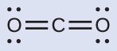
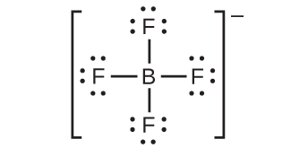
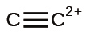

第7章 化学結合と分子の幾何構造
図7.1 | 「バッキーボール」という愛称のついたバックミンスターフラーレン分子(C₆₀)は、炭素原子のみを含み(左側)、サッカーボールのパターン(中央)に似た六角形と五角形の幾何学的な枠組みを形成しています。この分子構造は、建築家のR・バックミンスター・フラーにちなんで名づけられたもので、彼の革新的なデザインは、シンプルな幾何学的形状を組み合わせて、アリゾナ州ツーソン近郊にあるこの気象レーダードーム(右側)のような大きくて頑丈な構造物を生み出しました。(credit middle: modification of work by “Petey21”/Wikimedia Commons; credit right: modification of work by Bill Morrow)
この章の概要
7.1 イオン結合
7.2 共有結合
7.3 ルイス記号とルイス構造
7.4 形式電荷と共鳴
7.5 イオン結合と共有結合の強さ
7.6 分子構造と極性
はじめに
純粋な炭素は、黒鉛やダイヤモンドを含むさまざまな形態(同素体)で存在することが知られていました。しかし、炭素の新しい形態:バックミンスターフラーレンが認識されたのは、1985年になってからのことでした。この分子は、建築家であり発明家でもあるR・バックミンスター・フラー(1895-1983)にちなんで名付けられました。彼の代表的な建築デザインは、球体の表面を支える格子状のシェル構造を特徴とするジオデシックドームでした。実験的証拠から、C₆₀という式が明らかになり、科学者たちは、60個の炭素原子がどのようにして1つの対称的で安定した分子を形成するのかを決定しました。彼らは結合理論 - この章のトピック - によって導かれていました。それは、個々の原子がどのようにして結合し、より複雑な構造を形成するのかを説明してくれます。
7.1 イオン結合
この節が終わるまでに、あなたは次のことができるようになります:
•カチオン、アニオン、およびイオン化合物の形成について説明する
•一般的な金属元素と非金属元素の電荷を予測し、その電子配置を書く
ここまであなたが学んできたように、イオンとは、電荷を帯びた原子や分子のことです。カチオン(陽イオン)は中性の原子がその原子価殻から1個かそれ以上の電子を失うと形成され、アニオン(陰イオン)は中性の原子がその原子価殻に1個かそれ以上の電子を得ると形成されます。
イオンからなる化合物はイオン化合物(または塩)と呼ばれ、その構成イオンはイオン結合によって結合しています。イオン結合とは、反対に帯電したカチオンとアニオンの間の静電的な引力です。イオン化合物の性質は、イオン結合の本質をいくらか明らかにします。イオン性固体は結晶構造を示し、硬くて脆い傾向があります。また、それらは融点や沸点が高い傾向があり、それはイオン結合が非常に強いことを示唆しています。イオン性固体はまた、同じ理由から電気伝導性に乏しいです。イオン結合の強さによって、イオンは固体状態で自由に移動することが妨げられます。しかしながら、ほとんどのイオン性固体は水に容易に溶解します。ひとたび溶解または溶融したイオン化合物は、イオンが自由に動くことができるため、電気と熱の優れた伝導体となります。
中性原子とそれに関連するイオンは、非常に異なる物理的および化学的性質を持っています。ナトリウム原子は、軟らかい銀白色の金属であるナトリウム金属を形成し、それは空気中で激しく燃え、水と爆発的に反応します。塩素原子は黄緑色の気体である塩素気体Cl₂を形成し、それはほとんどの金属に対して非常に腐食性があり、動物や植物にとって非常に有毒です。ナトリウムと塩素という元素が激しく反応して、白色の結晶性化合物である塩化ナトリウム(一般的な食卓塩)が形成されます。この化合物にはナトリウムのカチオンと塩素のアニオンが含まれています(図7.2)。これらのイオンからなる化合物は、元素のナトリウムと塩素の性質とは全く異なる性質を示します。塩素は有毒ですが、塩化ナトリウムは生命に欠かせないものです。ナトリウム原子は水と激しく反応しますが、塩化ナトリウムは単に水に溶けるだけです。
図7.2 | (a)ナトリウムは柔らかい金属で、空気や水と反応するのを防ぐために鉱油の中で保存しなければなりません。(b)塩素は淡い黄緑色の気体です。(c)これらが結合すると、塩化ナトリウム(食卓塩)の白い結晶を形成します。(credit a: modification of work by “Jurii”/Wikimedia Commons)
イオン化合物の形成
二元イオン化合物は、ただ2つの元素で構成されています:それは、金属(カチオンを形成します)と非金属(アニオンを形成します)です。たとえば、NaClは二元イオン化合物です。私たちは、このような化合物の生成について、元素の周期的な性質という観点から考えることができます。金属元素の多くは、比較的低いイオン化ポテンシャルを有しており、電子を容易に失います。これらの元素は、周期表上では周期の左側に位置するか、族の最下部の付近に位置しています。非金属原子は比較的高い電子親和力を有しているため、金属原子が失った電子を容易に得ることができ、それによってその原子価殻を満たします。非金属元素は周期表の右上に見られます。
すべての物質は電気的に中性でなければならないので、イオン化合物のカチオンの正電荷の合計数は、アニオンの負電荷の合計数と等しくなければなりません。イオン化合物の化学式は、同じ数の正電荷と負電荷を与えるために必要なイオンの数の最も単純な比を表しています。たとえば、酸化アルミニウムAl₂O₃の化学式は、このイオン化合物が3つの酸化物アニオンO²⁻に対して2つのアルミニウムカチオンAl³⁺を含む[したがって、(2 × +3) +(3 × -2) = 0]ことを示しています。
しかしながら、イオン化合物の化学式は、そのイオンの物理的な配置を表していないことに注意しておくことが重要です。1個の塩化ナトリウム(NaCl)「分子」と呼ぶのは正しくありません。なぜなら、ナトリウムイオンと塩化物イオンのどの特定のペアであっても、その間には、それ自体での単一のイオン結合というものは存在しないからです。イオン間の引力は等方性、つまりすべての方向で同じです。これは、どの特定のイオンも周囲の反対の電荷のイオンのすべてに等しく引き付けられていることを意味します。この結果、イオンは強固に結合された三次元の格子構造へと自らを配置します。たとえば、塩化ナトリウムは、同数のNa⁺カチオンとCl⁻アニオンからなる規則的な配列で構成されています(図7.3)。
図7.3 | 塩化ナトリウム(一般的な食卓塩)の原子は、(a)相互作用する反対の電荷が最大になるように配置されています。小さい球体はナトリウムイオンを表し、大きい球体は塩化物イオンを表しています。拡張した図(b)では、幾何構造がより明確に見えます。それぞれのイオンは、周囲のイオンのすべて(この場合は6個)に「結合」されていることに注意してください。
Na⁺イオンとCl⁻イオンの間の強い静電引力は、それらを固体のNaClへとしっかりと結合しています。1モルの固体NaClを個別の気体状のNa⁺イオンとCl⁻イオンに解離させるには769 kJのエネルギーが必要です:
\[ {\rm NaCl\ (s) ⟶ Na^+\ (g) + Cl^–\ (g) \hspace{20pt}} ΔH = \rm 769\ kJ \]
カチオンの電子構造
カチオンを形成する際、主族元素の原子は、その価電子をすべて失う傾向があるため、周期表でその元素より前にある貴ガスの電子構造をとります。第1族(アルカリ金属)と第2族(アルカリ土類金属)では、その族番号は価電子の数と同じであり、結果として、すべての価電子が取り除かれたときに、これらの元素の原子から形成されるカチオンの電荷と同じになります。たとえば、カルシウムは第2族元素であり、その中性原子は20個の電子を持ち、基底状態の電子配置は1s²2s²2p⁶3s²3p⁶4s²です。Ca原子がその価電子を両方とも失うと、18個の電子、2+電荷、および1s²2s²2p⁶3s²3p⁶の電子配置を持つカチオンとなります。したがって、Ca²⁺イオンは貴ガスのArと等電子です。
第13～17族では、族番号は価電子の数を10だけ上回っています(第4周期以上の元素の原子では完全なd副殻の可能性を考慮しています)。したがって、すべての価電子が失われることによって形成されるカチオンの電荷は、族番号から10を引いた値に等しいです。たとえば、アルミニウム(第13族)は3+イオン(Al³⁺)を形成します。
期待される振る舞いの例外として、族の最下部に向かって位置する元素があります。期待されるイオンTl³⁺、Sn⁴⁺、Pb⁴⁺、Bi⁵⁺に加えて、これらの原子の価電子が部分的に失われると、Tl⁺、Sn²⁺、Pb²⁺、Bi³⁺のイオンが形成されることがあります。これらの1+カチオン、2+カチオン、3+カチオンの形成は、第13、14、15族の重元素の原子の価電子s電子対の比較的低いエネルギーを反映した不活性電子対効果に起因しています。水銀(第12族)もまた、予想外の振る舞いを示します:水銀は、予想される単原子イオンHg²⁺(水銀原子1個だけから形成されます)に加えて、二原子イオンHg₂²⁺(水銀原子2個から形成されるイオンで、Hg-Hg結合を持ちます)を形成します。
遷移金属元素および内部遷移金属元素は、主族元素とは異なる振る舞いをします。ほとんどの遷移金属カチオンは、最初に一番外側のs電子が失われ、時には次に外側の殻から1つまたは2つのd電子が失われる結果として、2+または3+の電荷を持ちます。たとえば、鉄(1s²2s²2p⁶3s²3p⁶3d⁶4s²)は 4s電子を失うことによってイオンFe²⁺(1s²2s²2p⁶3s²3p⁶3d⁶)を形成し、4s電子と3d電子の1つを失うことによってイオンFe³⁺(1s²2s²2p⁶3s²3p⁶3d⁵)を形成します。構造原理によれば、電子配置を構築する際には遷移元素のd軌道が最後に満たされますが、これらの原子がイオン化する際には、一番外側のs電子が最初に失われます。内部遷移金属がイオンを形成するときには、通常は3+の電荷を持ちますが、これは最も外側のs電子とdまたはf電子の1つとが失われた結果です。
例題7.1 カチオンの電子構造を決定する
人体にとっての「必須微量元素」として分類される元素は、少なくとも14種類あります。それらは、健全な身体機能に必要な元素であることから「必須」と、微量だけが必要とされることから「微量」と、そして、実際にはイオンであるという事実にもかかわらず「元素」と呼ばれています。これらの必須微量元素のうち、クロムと亜鉛の2つは、Cr³⁺とZn²⁺として必要とされています。これらのカチオンの電子配置を書いてください。
解法
まず、中性原子の電子配置を書きます:
Zn:[Ar]3d¹⁰4s²
Cr:[Ar]3d⁵4s¹
次に、最もエネルギーの高い軌道から電子を取り除きます。遷移金属では、まずs軌道から電子を取り除き、次にd軌道から電子を取り除きます。pブロック元素の場合は、p軌道から電子を取り除き、次にs軌道から電子を取り除きます。亜鉛は第12族のメンバーであるので、2+の電荷を持っているはずです。したがってそれは、s軌道の2個の電子だけを失います。クロムは遷移元素であり、カチオンを形成する際にはs電子を失い、その後d電子を失うことになります。したがって、イオンの電子配置は以下のようになります:
Zn²⁺:[Ar]3d¹⁰
Cr³⁺:[Ar]3d³
学習内容の確認
カリウムとマグネシウムは、私たちの食生活に必要とされています。これらの元素から予想されるイオンの電子配置を書いてください。
解答:K⁺:[Ar]、Mg²⁺:[Ne]
アニオンの電子構造
ほとんどの単原子アニオンは、中性の非金属原子が、その外側のs軌道とp軌道を完全に満たすのに十分な電子を得て、それによって次の貴ガスの電子配置に到達するときに形成されます。したがって、そのような陰イオンの電荷を決定するのは簡単です:電荷は、親原子のs軌道とp軌道を満たすために得なければならない電子の数に等しいです。たとえば、酸素は電子配置が1s²2s²2p⁴であるのに対し、酸素アニオンは貴ガスのネオン(Ne)の電子配置1s²2s²2p⁶を有します。原子価軌道を埋めるために必要な2つの電子が追加されたことで、酸化物イオンは2-(O²⁻) の電荷を持ちます。
例題7.2 アニオンの電子構造を決定する
セレンとヨウ素は、アニオンを形成する2つの必須微量元素です。このアニオンの電子配置を書いてください。
解法
Se²⁻: [Ar]3d¹⁰4s²4p⁶
I⁻: [Kr]4d¹⁰5s²5p⁶
学習内容の確認
リン原子とその陰イオンの電子配置を書いてください。アニオンの電荷を示してください。
解答:P:[Ne]3s²3p³、P³⁻:[Ne]3s²3p⁶
7.2 共有結合
この節が終わるまでに、あなたは次のことができるようになります:
•共有結合の形成について記述する
•電気陰性度を定義し、共有結合の極性を評価する
イオン結合は、典型的には金属原子と非金属原子の間の電子の移動によって生成される反対に帯電したイオンの静電引力に起因します。別のタイプの結合は、電子の「共有された」ペアによる原子の相互の引力から生じます。このような結合は共有結合と呼ばれています。共有結合は、2つの原子が自身に電子を引き寄せる傾向が似ているとき(すなわち、両方の原子が同一またはかなり類似したイオン化エネルギーと電子親和力を持っているとき)に、2つの原子の間で形成されます。たとえば、2つの水素原子は共有結合してH₂分子を形成します。H₂分子中のそれぞれの水素原子はそれを安定させる2つの電子を持っており、それぞれの原子には貴ガスのHeと同じ数の価電子があることになります。
共有結合を含む化合物は、イオン化合物とは異なる物理的性質を示します。電気的に中性である分子間の引力は、電荷を帯びたイオン間の引力よりも弱いため、共有結合化合物は一般的にイオン化合物よりも融点や沸点がかなり低くなります。実際、多くの共有結合化合物は、室温では液体または気体であり、固体状態では、イオン性固体よりもはるかに柔らかいのが一般的です。さらに、イオン化合物が水に溶けると電気の伝導性が良いのに対し、ほとんどの共有結合化合物は水に不溶です。それらは電気的に中性であるため、どのような状態でも電気の伝導性が悪いです。
共有結合の形成
非金属原子は、頻繁に他の非金属原子と共有結合を形成します。たとえば、水素分子H₂は、2個の水素原子の間に共有結合を持っています。図7.4は、この結合が形成される理由を示しています。右端から見ていくと、赤い線で示された特定のポテンシャルエネルギーを持つ2つの別々の水素原子があることがわかります。x軸に沿って2つの原子間の距離が示されています。2つの原子がお互いに近づくと(x軸に沿って左に移動すると)、それらの原子価軌道(1s)が重なり始めます。すると、それぞれの水素原子上の単一の電子は両方の原子核と相互作用し、両方の原子の周りの空間を占めるようになります。共有された電子のそれぞれが両方の原子核に強く引き寄せられることで系が安定化し、結合距離が小さくなるにつれてポテンシャルエネルギーが減少します。原子同士が接近し続けると、2つの原子核の正電荷がお互いに反発し始め、ポテンシャルエネルギーが増加します。結合の長さは、最も低いポテンシャルエネルギーが達成される距離によって決まります。
図7.4 | 2つの別々の水素原子(右側)のポテンシャルエネルギーは、それらがお互いに近づくにつれて減少し、それぞれの原子上の単一の電子が共有されて共有結合を形成します。結合の長さは、最も低いポテンシャルエネルギーが達成される原子核間の距離です。
化学結合を切断するためにはエネルギーを加えなければならないのに対し(吸熱過程)、化学結合を形成するとエネルギーが放出される(発熱過程)というのを覚えておくことが肝心です。H₂の場合、共有結合は非常に強く、1モルの水素分子の結合を壊して原子を分離させるためには、436 kJという多量のエネルギーを加えなければなりません:
\[ {\rm H_2\ (g) ⟶ 2H\ (g)} \hspace{20pt} ΔH = {\rm 436\ kJ} \]
逆に、2モルのH原子から1モルのH₂分子が形成されるときには、同じ量のエネルギーが放出されます:
\[ {\rm 2H\ (g) ⟶ H_2\ (g)} \hspace{20pt} ΔH = {\rm -436\ kJ} \]
純粋な共有結合と極性共有結合
H₂、Cl₂、その他の二原子分子のように、共有結合を形成する原子が同一であるならば、結合中の電子は等しく共有されなければなりません。私たちは、これのことを純粋な共有結合と呼びます。純粋な共有結合で共有される電子は、それぞれの原子核の近くにある確率が等しいです。
Cl₂の場合、それぞれの原子は7個の価電子から始まり、それぞれのClは他の原子と1個の電子を共有し、1つの共有結合を形成します:
\[ \rm Cl + Cl ⟶Cl_2 \]
個々の原子のそれぞれの周りにある電子の総数は、6個の非結合電子と2個の共有電子(すなわち結合電子)の合計8個で、貴ガスのアルゴンの価電子数と一致します。結合している原子が同じなので、Cl₂はまた、純粋な共有結合の特徴を示します。
共有結合によって結ばれた原子が異なるものである場合、結合電子は共有されますが、もはや均等に共有されるわけではありません。代わりに、結合電子は、一方の原子の方へと他方の原子よりも引き付けられ、引き付けられる原子に向かって電子密度のシフトを生じさせます。このような電子の不均等な分布は極性共有結合として知られており、一方の原子には部分的に正の電荷が、他方の原子には部分的に負の電荷があることを特徴としています。電子をより強く引き寄せる原子の方が部分的に負の電荷を獲得し、その逆もまた同様です。たとえば、塩化水素分子のH-Cl結合の中の電子は、水素原子の近くよりも塩素原子の近くで多くの時間を過ごします。このように、塩化水素分子では、塩素原子は部分的な負の電荷を帯び、水素原子は部分的な正の電荷を帯びることになります。図7.5はH-Cl結合の中の電子の分布を示しています。Clの周りの共有される領域は、Hの周りの共有される領域よりもずっと大きいことに注目してください。これを図7.4のH₂非極性結合における電子の均等な分布と比較してみてください。
私たちは、極性共有結合における正と負の原子を、小文字のギリシャ文字「デルタ」δを使って表すことがあります。プラス記号やマイナス記号を用いて、原子が部分的に正の電荷を持っているか(δ+)、あるいは部分的に負の電荷を持っているか(δ-)を示します。この記号法は、H-Cl分子の場合について図7.5に示されています。
図7.5 | (a)HCl分子の電子密度の分布は不均等です。塩素原子の原子核の周辺で電子密度が高くなっています。黒い小さな点は分子内の水素核と塩素核の位置を示しています。(b)記号δ+とδ-はH-Cl結合の極性を示します。
電気陰性度
結合が非極性共有結合または極性共有結合であるかどうかは、電気陰性度と呼ばれる結合原子の性質によって決定されます。電気陰性度とは、原子が自分自身に向けて電子(すなわち電子密度)を引き寄せる傾向を示す指標です。これは、結合中の2つの原子の間で共有されている電子がどのように分配されるかを決定します。原子がその結合の中の電子をより強く引き付けるほど、電気陰性度はより大きくなります。極性共有結合の中の電子は、電気陰性度の高い原子に向かって移動します。したがって、電気陰性度のより大きな原子が、部分的な負の電荷を帯びる原子となります。電気陰性度の差が大きいほど、電子の分布はより極性化され、原子の部分的な電荷は大きくなります。
図7.6は、20世紀の最も有名な化学者の1人であるライナス・ポーリング(図7.7)が提唱した元素の電気陰性度の値を示しています。一般的に電気陰性度は周期表のある周期では左から右に向かって高くなり、ある族では下に向かって低くなります。したがって、右上に位置する非金属は電気陰性度が最も高くなる傾向があり、フッ素が最も電気陰性度が高い元素です(EN = 4.0)。金属は電気陰性度の低い元素となる傾向があり、第1族の金属は電気陰性度が最も低いです。なお、貴ガスは満たされた原子価殻を持っており、それらの原子は通常、他の原子と電子を共有しないため、この図から除外されていることに注意してください。(XeO₂のような貴ガス化合物は実際に存在しますが、それらは極端な条件下でしか形成されないため、電気陰性度の一般的なモデルにはうまく収まりません。)
図7.6 | ポーリングによって導き出された電気陰性度の値は、周期表の右上に向かうほど電気陰性度が高くなるという予測可能な周期的傾向に従っています。
電気陰性度と電子親和力
私たちは、電気陰性度と電子親和力を混同しないように注意しなければなりません。元素の電子親和力とは、測定が可能な物理的な量、すなわち分離した気相の原子が電子を獲得するときに放出されたり吸収されたりするエネルギーのことであり、単位はkJ/molです。一方、電気陰性度は、原子が結合の中で電子をどれだけ強く引きつけているかを表します。これは無次元の量であり、測定されるものではなく計算されるものです。ポーリングは、異なる種類の結合を破壊するのに必要なエネルギー量を比較することによって、最初の電気陰性度の値を導き出しました。彼は0から4までの任意の相対的なスケールを選択しました。
化学者の肖像
ライナス・ポーリング
図7.7のライナス・ポーリングは、共同でなく(個人で)2つのノーベル賞を受賞した唯一の人物です:1つは化学結合の性質に関する研究で1954年に化学賞を、もう1つは大量破壊兵器に反対したことで1962年に平和賞を受賞しています。彼は、電気陰性度や共鳴構造を含む、現在の化学の理解の基礎となっている理論や概念の多くを発展させました。
図7.7 | ライナス・ポーリング(1901-1994)は、化学の分野に多くの重要な貢献をしました。彼はまた、健康や核兵器に関する論点を公表する著名な活動家でもありました。
ポーリングは化学以外にも多くの分野で貢献をしました。鎌状赤血球貧血の研究では、この病気の原因(遺伝的に受け継がれた異常なタンパク質が血液中に存在すること)を明らかにし、分子遺伝学の分野に道を開きました。彼はまた、核実験による放射性降下物が公衆衛生上のリスクであることを証明し、核兵器の実験を抑制する上でも重要な役割を果たしました。
電気陰性度と結合の種類
2つの結合原子の電気陰性度の差(ΔEN)の絶対値は、その結合において期待される極性の大まかな尺度となり、したがって、結合の種類を与えてくれます。この差が非常に小さいか、またはゼロの場合、結合は共有結合であり、非極性です。この差が大きい場合、結合は極性共有結合またはイオン結合です。H-H結合、H-Cl結合、Na-Cl結合の原子間の電気陰性度の差の絶対値は、それぞれ0(非極性共有結合)、0.9(極性共有結合)、2.1(イオン結合)です。原子間の電子の共有の度合いは、完全に均等なもの(純粋な共有結合)から全くそうでないもの(イオン結合)までさまざまです。図7.8は、電気陰性度の差と結合の種類との間の関係性を示しています。
図7.8 | 2つの原子間の電気陰性度の差が大きくなるほど、結合はイオン性になります。
共有結合、極性共有結合、イオン結合に関連する電気陰性度の差の大まかな目安が図7.8に示されています。しかしながら、この表はあくまでも一般的な指針であり、多くの例外があります。たとえば、HFのH原子とF原子の電気陰性度の差は1.9であり、NH₃のN原子とH原子の電気陰性度の差は0.9ですが、これらの化合物はどちらも極性共有結合と見なされる結合を形成しています. 同様に、NaClのNa原子とCl原子の電気陰性度の差は2.1であり、MnI₂のMn原子とI原子の電気陰性度の差は1.0ですが、これらの物質の両方がイオン化合物を形成しています。
ある結合の共有結合性またはイオン性の特性を知るための最良の指針は、関係する原子の種類と周期表の中での相対的な位置を考慮することです。2つの非金属間の結合は一般的に共有結合であり、金属と非金属の間の結合はしばしばイオン結合です。
一部の化合物には、共有結合とイオン結合の両方が含まれています。OH⁻、NO₃⁻、NH₄⁺などの多原子イオンの中の原子は、極性共有結合によってまとまっています。しかしながら、これらの多原子イオンは、反対の電荷のイオンと結合することによってイオン化合物を形成します。たとえば、硝酸カリウムKNO₃は、K⁺カチオンと多原子のNO₃⁻アニオンを含んでいます。したがって、硝酸カリウムの中の結合は、イオンK⁺とNO₃⁻の間の静電引力に起因するイオン結合であるとともに、NO₃⁻内の窒素原子と酸素原子の間の共有結合でもあります。
例題7.3 電気陰性度と結合の極性
結合の極性は、タンパク質の構造を決定する上で重要な役割を果たしています。図7.6の電気陰性度の値を用いて、アミノ酸の中でよく見られる以下の共有結合を極性が大きくなる順に並べてください。そして、δ+とδ-の記号を用いて正と負の原子を指定してください:
C–H、C–N、C–O、N–H、O–H、S–H
解法
これらの結合の極性は、電気陰性度の差の絶対値が大きくなるほど大きくなります。δ-の指定がある原子は2つの中で電気陰性度が高いものです。表7.1は、これらの結合を極性が大きくなる順に示しています。

表7.1
学習内容の確認
シリコーンとは、高分子化合物であり、特に以下の種類の共有結合を含むものです:Si-O、Si-C、C-H、C-C。図7.6の電気陰性度の値を用いて、これらの結合を極性が大きくなる順に並べ、δ+、δ-の記号を用いて正と負の原子を指定してください。
解答:
7.3 ルイス記号とルイス構造
この節が終わるまでに、あなたは次のことができるようになります:
•中性原子とイオンのルイス記号を書く
•単純な分子の中の結合を描いたルイス構造を描写する
ここまで、この章では、私たちは原子および/またはイオンの間に形成されるさまざまな種類の結合について議論してきました。すべての場合において、これらの結合は原子間での価電子の共有または移動を伴います。この節では、私たちは価電子と化学結合の代表的な描写方法であるルイス記号とルイス構造を探求していきます。
ルイス記号
私たちは、原子や単原子イオンの価電子配置を記述するためにルイス記号を用います。ルイス記号は元素記号と、それを囲むドット(価電子ごとに1つのドット)で構成されます:
図7.9は、周期表の第3周期の元素のルイス記号を示しています。
図7.9 | 周期表の第3周期のそれぞれの元素の価電子の数を示すルイス記号。
また、ルイス記号は原子からのカチオンの形成を示すのにも使用できます。ここではナトリウムとカルシウムについて示されています:
同様に、それらは原子からのアニオンの形成を示すのにも使用できます。ここでは塩素と硫黄について示されています:
図7.10は、イオン化合物の形成中の電子の移動を示すためにルイス記号を使用することを例示しています。
図7.10 | カチオンは原子が電子を失ったときに形成され、それはより少ないルイスのドットによって表現されます。一方、アニオンは原子が電子を獲得することによって形成されます。電子の総数は変わりません。
ルイス構造
私たちはまた、共有結合の形成を示すためにもルイス記号を使用します。それはルイス構造と呼ばれる分子や多原子イオンの結合を説明する描写で示されます。たとえば、2つの塩素原子が塩素分子を形成するときには、それらは1対の電子を共有しています:
ルイス構造は、それぞれのCl原子が結合に使われない3つの電子対(孤立電子対と呼ばれます)と、1つの共有電子対(原子の間に書かれています)を持っていることを示しています。共有電子対を示すためにダッシュ(または線)が使われることもあります:
単一の共有電子対は単結合(一重結合)と呼ばれます。それぞれのCl原子は8個の価電子と相互作用します:孤立電子対の中の6個と単結合の中の2個です。
オクテット則
他のハロゲン分子(F₂、Br₂、I₂、およびAt₂)は、塩素分子のような結合を形成します:原子間に1つの単結合と、1つの原子につき3つの孤立電子対です。これにより、それぞれのハロゲン原子は貴ガスの電子配置を持つことができます。主族原子が8個の価電子を得るのに十分な結合を形成する傾向は、オクテット則として知られています。
原子が形成することのできる結合の数は、しばしば、オクテット(8個の価電子)に達するのに必要な電子の数から予測することができます。これは、周期表の第2周期の非金属(C、N、O、およびF)の場合に特に当てはまります。たとえば、第14族元素のそれぞれの原子は、その最外殻に4個の電子を持っているため、オクテットに到達するためには、さらに4個の電子が必要です。これらの4つの電子は、4つの共有結合を形成することによって得ることができます。ここには、CCl₄(四塩化炭素)の炭素およびSiH₄(シラン)のケイ素について例示されています。水素は、その価電子殻を満たすために2つの電子しか必要としないので、オクテット則の例外です。遷移元素や内部遷移元素もオクテット則に従いません:
窒素のような第15族元素は、原子のルイス記号の中に5つの価電子を持っています:1つの孤立電子対と3つの不対電子です。オクテットを得るためには、NH₃(アンモニア)のように、これらの原子は3つの共有結合を形成します。酸素と第16族の他の原子は、2つの共有結合を形成することによってオクテットを得ます:
二重結合と三重結合
前述したように、原子のペアが1つの電子対を共有している場合、私たちはこれを単結合と呼びます。しかしながら、必要なオクテットを達成するためには、原子のペアが複数の電子対を共有する必要があるかもしれません。二重結合は、原子のペアの間で2つの電子対が共有されているときに形成されます。たとえば、CH₂O(ホルムアルデヒド)の炭素原子と酸素原子の間や、C₂H₄(エチレン)の2つの炭素原子の間の結合です:

一酸化炭素(CO)とシアン化物イオン(CN⁻)のように、原子のペアによって3つの電子対が共有されている場合、三重結合が形成されます:
オクテット則を用いてルイス構造を書く
私たちは、非常に単純な分子や分子イオンについては、構成原子の不対電子を対にするだけでルイス構造を書くことができます。これらの例を参照してください:

より複雑な分子や分子イオンの場合は、ここに概要が説明されている段階ごとの手順に従うと便利です:
価電子(外殻電子)の総数を求めます。カチオンの場合は、正の電荷の1つごとに電子を1個ずつ引きます。アニオンの場合は、負の電荷の1つごとに電子を1個ずつ加えます。
分子またはイオンの骨格構造を描き、中心原子の周囲に原子を配置します。(一般的には、最も電気的に陰性でない元素を中心に配置します。)それぞれの原子と中心原子を単結合(1つの電子対)でつなぎます。
残りの電子を末端の原子(水素を除く)に孤立電子対として分配し、それぞれの原子の周りに1オクテットを完成させます。
残りの電子をすべて中心原子に配置します。
可能な限りオクテットが得られるように、外側の原子の電子を中心原子と多重結合するように再配置します。
この手順に従う例として、SiH₄、CHO₂⁻、NO⁺、OF₂のルイス構造を決定してみましょう:
分子またはイオンの価電子(外殻電子)の総数を求めます。
- 分子の場合は、分子内のそれぞれの原子の価電子の数を足します:
\(\rm SiH_4\) \[ \begin{eqnarray} \rm Si:4個の価電子/原子×1個の原子&=&4\\ \rm +\ H:1個の価電子/原子×4個の原子&=&4\\ \hline &=& 8個の価電子 \end{eqnarray} \] - CHO₂⁻のような陰イオンの場合は、原子の価電子の数にイオンの負電荷の数を足します(1つの負電荷に対して1個の電子が得られます):
\(\rm {CHO_2}^-\) \[ \begin{eqnarray} \rm C:4個の価電子/原子×1個の原子&=&4\\ \rm H:1個の価電子/原子×1個の原子&=&1\\ \rm O:6個の価電子/原子×2個の原子&=&12\\ \rm +\hspace{85pt} 1個の追加の電子&=&1\\ \hline &=& 18個の価電子 \end{eqnarray} \] - NO⁺のような陽イオンの場合は、イオンの中の原子の価電子の数を足して、その価電子数の合計からイオンの正電荷の数を引きます(1つの正電荷に対して1個の電子が失われます):
\(\rm NO^+\) \[ \begin{eqnarray} \rm N:5個の価電子/原子×1個の原子&=&5\\ \rm O:6個の価電子/原子×1個の原子&=&6\\ \rm +\hspace{60pt} -1個の電子(正電荷)&=&-1\\ \hline &=& 10個の価電子 \end{eqnarray} \] - OF₂は中性分子なので、単純に価電子の数を足します:
\(\rm OF_2\) \[ \begin{eqnarray} \rm O:6個の価電子/原子×1個の原子&=&6\\ \rm +\ F:7個の価電子/原子×2個の原子&=&14\\ \hline &=& 20個の価電子 \end{eqnarray} \]
- 分子の場合は、分子内のそれぞれの原子の価電子の数を足します:
分子またはイオンの骨格構造を描き、中心原子の周囲に原子を配置し、それぞれの原子と中心原子を単結合(1つの電子対)でつなぎます。(イオンは構造の周りに括弧をつけて、括弧の外側に電荷を示していることに注意してください):
CHO₂⁻のように複数の原子の配置が可能な場合には、私たちは実験的な証拠を用いて正しいものを選択しなければなりません。一般的に、より電気的に陰性でない元素は中心原子である可能性が高くなります。CHO₂⁻では、電気陰性度の低い炭素原子が中心位置を占めて、酸素原子と水素原子がそれを取り囲みます。他の例としては、POCl₃のP、SO₂のS、ClO₄⁻のClなどがあります。例外として、水素が中心原子になることはほとんどありません。最も電気的に陰性な元素であるフッ素も中心原子にはなれません。残りの電子を末端の原子(水素を除く)に孤立電子対として分配し、それらの原子価殻を電子のオクテットで完成させます。
- SiH₄には電子が残っていないので、そのままです:
- 残りの電子をすべて中心原子に配置します。
- SiH₄、CHO₂⁻、NO⁺については、残りの電子がありません。私たちはすでにステップ1で求めたすべての電子を配置しました。
- OF₂については、ステップ3では16個の電子が残っていたので、そのうち12個を配置しました。そのため、4個の電子が残っており、これを中心原子上に配置します:
- 可能な限りオクテットが得られるように、外側の原子の電子を中心原子と多重結合するように再配置します。
- SiH₄:Siはすでにオクテットを持っているので、何もする必要はありません。
- CHO₂⁻:私たちは価電子を酸素原子に孤立電子対として分配しましたが、炭素原子にはオクテットがありません:

- NO⁺:このイオンには8個の価電子を加えましたが、どちらの原子もオクテットを持っていません。私たちはすでにステップ1で求めた合計を使ってしまっているので、これ以上電子を足すことはできません。そのため、私たちは多重結合を作るために電子を動かさなければなりません:
これはまだオクテットを作り出さないので、私たちは別のペアを移動させて、三重結合を形成しなければなりません:
- OF₂では、それぞれの原子は描かれた通りにオクテットを持っているので、何も変えません。
例題7.4 ルイス構造を書く
NASAのカッシーニ-ホイヘンス探査機は、土星の月の1つであるタイタンで有毒なシアン化水素(HCN)の大きな雲を検出しました。タイタンには、エタン(H₃CCH₃)、アセチレン(HCCH)、アンモニア(NH₃)も含まれています。これらの分子のルイス構造は何ですか?
解法
ステップ1.価電子の数を計算します。
HCN: (1 × 1) + (4 × 1) + (5 × 1) = 10
H₃CCH₃: (1 × 3) + (2 × 4) + (1 × 3) = 14
HCCH: (1 × 1) + (2 × 4) + (1 × 1) = 10
NH₃: (5 × 1) + (3 × 1) = 8
ステップ2.骨格を描き、原子を単結合でつなぎます。Hは決して中心原子とはならないことを思い出してください:

ステップ3.必要に応じて、末端原子に電子を分配します:

HCN:6個の電子がNに配置されます
H₃CCH₃:電子は残っていません
HCCH:電子を受け入れることができる末端原子を持っていません
NH₃:電子を受け入れることができる末端原子を持っていません
ステップ4.必要に応じて、残りの電子を中心原子に配置します:
HCN:電子は残っていません
H₃CCH₃:電子は残っていません
HCCH:4個の電子が炭素に配置されます
NH₃:2個の電子が窒素に配置されます
ステップ5.必要に応じて、それぞれの原子がオクテットを得られるように、多重結合を形成するように電子を再配置します:
HCN:C-N結合をもう2つ形成します
H₃CCH₃:すべての原子は正しい数の電子を持っています
HCCH:2つの炭素原子の間に三重結合を形成します
NH₃:すべての原子は正しい数の電子を持っています
学習内容の確認
一酸化炭素COと二酸化炭素CO₂は共に化石燃料の燃焼による生成物です。これらの気体はどちらも問題を引き起こします:COは有毒であり、CO₂は地球規模の気候変動に関与しています。これら2つの分子のルイス構造は何ですか?
解答:
さまざまな科学のつながり
フラーレンの化学
炭素のすすは有史以前から人類に知られていましたが、すすの主成分の分子構造が発見されたのはごく最近のことでした。1996年のノーベル化学賞は、炭素の新しい形態であるC₆₀バックミンスターフラーレン分子(図7.1)を発見した研究によって、リチャード・スモーリー(図7.11)、ロバート・カール、ハロルド・クロトーに授与されました。C₆₀を基にして、球状や管状といったさまざまな形状の化合物の一群が発見されました。フラーレンと呼ばれるこのタイプの分子は、さまざまな応用が期待されています。フラーレンは、その大きさと形状から、他の分子を包み込むことができるため、水素貯蔵から目標を定めた薬物送達システムまで、さまざまな用途に応用できる可能性を秘めています。また、フラーレンには独特な電子的および光学的性質があり、太陽電池デバイスや化学センサーなどにうまく活用されています。
図7.11 | ライス大学の物理学、化学、天文学の教授であったリチャード・スモーリー(1943-2005)は、フラーレン化学を推進した第一人者の1人です。2005年に彼が死去した際、合衆国上院は彼を「ナノテクノロジーの父」として表彰しました。(credit: United States Department of Energy)
オクテット則の例外
多くの共有結合分子は、ルイス構造の中に8個の電子を持たない中心原子を持っています。これらの分子は3つのカテゴリーに分類されます:
•奇数電子分子は、奇数の価電子を持ち、そのため不対電子を持ちます。
•電子不足分子は、中心原子の電子数が貴ガス配置に必要な数よりも少ない分子です。
•超原子価分子は、中心原子の電子数が貴ガス配置に必要な数よりも多い分子です。
奇数電子分子
私たちは、奇数個の電子を含む分子をフリーラジカルと呼んでいます。一酸化窒素(NO)は奇数電子分子の一例です。それは、内燃機関の中で酸素と窒素が高温で反応するときに生成されます。
NOのような奇数電子分子のルイス構造を描くには、私たちは他の分子の場合と同じ5つのステップに従いますが、いくつかの小さな変更があります:
価電子(外殻電子)の総数を求めます。価電子の合計は、5(Nに由来)＋6(Oに由来)=11です。奇数であることは直ちに私たちがフリーラジカルを有していることを教えてくれるので、すべての原子が原子価殻に8個の電子を持つことはできないことがわかります。
分子の骨格構造を描きます。私たちはN-O単結合の骨格を簡単に描くことができます:
N-O残りの電子を末端の原子に孤立電子対として分配します。この場合、中心原子がないので、両方の原子の周りに電子を分配します。このような状況では、より電気的に陰性な原子に8個の電子を与えます。したがって、酸素は満たされた原子価殻を持つことになります:
残りの電子をすべて中心原子に配置します。残りの電子がないので、このステップは適用されません。
可能な限りオクテットが得られるように、中心原子と多重結合するように電子を再配置します。私たちは、奇数電子分子ではすべての原子がオクテットを持つことはできないことがわかっていますが、それぞれの原子をできるだけオクテットに近づけたいと考えています。この場合では、窒素の周りには5個の電子しかありません。窒素のオクテットに近づくためには、私たちは酸素から1つの孤立電子対を取り出し、それを使ってNOの二重結合を形成します。(私たちは酸素の別の孤立電子対を取り出して、三重結合を形成することはできません。なぜなら、そうすると窒素は9個の電子を持つことになってしまうからです):
電子不足分子
私たちはまた、満たされた原子価殻を持たない中心原子を含むいくつかの分子にも出会います。一般的には、それらは第2族と第13族の中心原子と、水素または多重結合を形成しない他の原子である外側の原子とを持つ分子です。たとえば、二水素化ベリリウムBeH₂と三フッ化ホウ素BF₃のルイス構造では、ベリリウム原子とホウ素原子はそれぞれ4個と6個の電子を持っています。BF₃のホウ素原子とフッ素原子の間に二重結合を持つ構造を描いて、オクテット則を満たすことは可能ですが、実験的証拠は、結合の長さがB-F単結合によって期待されるものに近いことを示しています。これは、最高のルイス構造が3つのB-F単結合と電子不足のホウ素を持っていることを示唆しています。この化合物の反応性も電子不足のホウ素と一致しています。しかしながら、このB-F結合は、B-F単結合によって実際に期待されるものよりもわずかに短く、実際の分子の中に何らかの二重結合的な性質があることを示しています。
BF₃の中のホウ素原子のように8個の電子を持たない原子は、非常に反応性が高いです。それは、孤立電子対を持つ原子を含む分子と容易に結合します。たとえば、NH₃は、窒素の孤立電子対をホウ素原子と共有することができるため、BF₃と反応します:
超原子価分子
周期表の第2周期(n = 2)の元素は、4つの原子価軌道(1つの2s軌道と3つの2p軌道)しか持っていないため、その原子価殻軌道に8個の電子しか収容できません。3番目以上の周期(n≧3)の元素は、5つ以上の原子価殻軌道を持ち、他の原子と5対以上の電子を共有することができます。なぜなら、それらは同じ殻内に空のd軌道を持つからです。これらの元素から形成された分子は超原子価分子と呼ばれることがあります。図7.12は、2つの超原子価分子、PCl₅とSF₆のルイス構造を示しています。
図7.12 | PCl₅では中心原子のリンが5対の電子を共有しています。SF₆では硫黄が6対の電子を共有しています。
IF₅やXeF₄のようないくつかの超原子価分子では、中心原子の外殻にある電子の一部が孤立電子対になっています:
私たちがこれらの分子のルイス構造を書くときには、外側の原子の原子価殻を8個の電子で満たした後にも電子が残っていることに気づきます。これらの余分な電子は中心原子に割り当てられなければなりません。
例題7.5 ルイス構造を書く:オクテット則の違反
キセノンは貴ガスですが、多くの安定な化合物を形成します。私たちは先にXeF₄について調べました。XeF₂とXeF₆のルイス構造は何ですか?
解法
先に議論した6つのステップに従うことによって、私たちは任意の共有結合分子のルイス構造を描くことができます。この場合では、私たちは、最後のいくつかのステップを短縮することができます。なぜなら、すべてのステップを適用するわけではないからです。
ステップ1.価電子の数を計算します:
XeF₂: 8 + (2 × 7) = 22
XeF₆: 8 + (6 × 7) = 50
ステップ2.原子を単結合でつないで骨格を描きます。フッ素は中心原子になれないので、キセノンが中心原子になります:
ステップ3.残りの電子を分配します。
XeF₂:それぞれのF原子の周りに3つの孤立電子対を配置します。これは、12個の電子を必要とし、それぞれのF原子に8個の電子を与えます。このようにして、6個の電子(3個の孤立電子対)が残ります。これらの孤立電子対はXe原子に配置しなければなりません。Xe原子が空の原子価殻d軌道を持ち、8個よりも多い電子を受け入れることができるため、これは容認可能です。XeF₂のルイス構造は、2つの結合対とXe原子の周りに3つの孤立電子対を示しています:
XeF₆:私たちはそれぞれのF原子の周りに3つの孤立電子対を配置します。これは、36個の電子を必要とします。2つの電子が残り、この孤立電子対はXe原子に配置されます:
学習内容の確認
ハロゲンはハロゲン間化合物と呼ばれる一群の化合物を形成します。ハロゲン間化合物では、ハロゲン原子がお互いに共有結合しています。ハロゲン間化合物BrCl₃とICl₄⁻のルイス構造を書いてください。
解答:
7.4 形式電荷と共鳴
この節が終わるまでに、あなたは次のことができるようになります:
•任意のルイス構造の原子の形式電荷を計算する
•形式電荷を使用して、与えられた分子についての最も妥当なルイス構造を特定する
•共鳴の概念を説明し、与えられた分子についての共鳴構造を表すルイス構造を描く
前の節では、私たちは分子や多原子イオンのルイス構造の書き方について議論しました。しかしながら、これまで見てきたように、いくつかの場合では、ある分子について妥当な構造が複数あるように見えます。妥当な構造が複数あるときには、私たちは形式電荷の概念を使って、最も適切なルイス構造を予測するのに役立てることができます。
形式電荷を計算する
ある分子の中の原子の形式電荷とは、もし結合中の電子を原子間で均等に再分配することができたならば、その原子が持つであろう仮想的な電荷のことです。別の言い方をすれば、形式電荷は、中性原子の価電子の数から非結合電子を差し引き、ルイス構造の中でその原子に結合している結合の数を差し引いたときに得られるもの、ということです。
したがって、私たちは以下のようにして形式電荷を計算します:
\[ 形式電荷=原子価殻の電子の数(自由原子)-孤立電子対の数-\frac{1}{2}結合電子の数 \]
私たちは構造全体の形式電荷の和を求めることによって、形式電荷の計算をダブルチェックすることができます。分子内のすべての原子の形式電荷の和はゼロでなければなりません。イオン内の形式電荷の和はイオンの電荷と等しくなければなりません。
ある原子について計算された形式電荷は、分子内のその原子の実際の電荷ではないということを覚えておかなければなりません。形式電荷は便利な帳簿付けの手順にすぎず、実際の電荷の存在を示すものではありません。
例題7.6 ルイス構造から形式電荷を計算する
ハロゲン間化合物イオンICl₄⁻のそれぞれの原子に形式電荷を割り当ててください。
解法
ステップ1.私たちは、すべてのI-Cl結合について、結合電子対を等しく分割します:
ステップ2.私たちは、孤立電子対をそれらの原子に割り当てます。これで、それぞれのCl原子は割り当てられた7つの電子を持っており、I原子は8つの電子を持っていることになります。
ステップ3.中性原子の価電子の数からこの数を引きます:
I: 7 – 8 = –1
Cl: 7 – 7 = 0
すべての原子の形式電荷の和は-1に等しく、これはイオンの電荷(–1)と同一です。
学習内容の確認
一酸化炭素分子のそれぞれの原子について形式電荷を計算してください:
解答:C −1、O +1
例題7.7 ルイス構造から形式電荷を計算する
ハロゲン間化合物分子BrCl₃のそれぞれの原子に形式電荷を割り当ててください。
解法
ステップ1.それぞれのBr-Cl結合の電子の1つをBr原子に、1つをその結合のCl原子に割り当てます:
ステップ2.孤立電子対をそれぞれの原子に割り当てます。これで、それぞれのCl原子は7個の電子を持ち、Br原子は7個の電子を持つことになります。
ステップ3.中性原子の価電子の数からこの数を引きます。これで形式電荷が得られます:
Br: 7 – 7 = 0
Cl: 7 – 7 = 0
BrCl₃のすべての原子はゼロの形式電荷を持っており、形式電荷の合計はゼロになります(中性分子ではそうでなければなりません)。
学習内容の確認
NCl₃のそれぞれの原子の形式電荷を決定してください。
解答:N:0、3つのCl原子すべて:0
形式電荷を用いて分子構造を予測する
分子やイオンの中の原子の配置を分子構造と呼びます。多くの場合、ルイス構造の書き方の手順に従うと、複数の可能性のある分子構造(たとえば多重結合や孤立電子対の配置の違い、あるいは原子の配置の違いなど)につながることがあります。特定の分子やイオンについて、可能な構造のうちどれが最も可能性が高いかを決定する際には、形式電荷に関するいくつかの指針が役立ちます:
すべての形式電荷がゼロである分子構造は、いくつかの形式電荷がゼロではない構造よりも好ましいです。
もしルイス構造がゼロ以外の形式電荷を持たなければならないならば、ゼロ以外の最小の形式電荷を持つ配置が好ましいです。
隣接する形式電荷がゼロであるか、逆の符号であるようなルイス構造が好ましいです。
形式電荷の分布が似ているいくつかのルイス構造の中から選ばなければならない場合は、より電気的に陰性な原子が負の形式電荷を持つ構造が好ましいです。
これらの指針がどのように適用されるかを見るために、二酸化炭素CO₂のいくつかの可能な構造を考えてみましょう。これまでの議論から、私たちは、より電気的に陰性でない原子が典型的には中心の位置を占めることがわかっていますが、形式電荷を使えば、なぜこのようなことが起こるのかを理解することができます。この構造について、私たちは3つの可能性を描くことができます:中心にある炭素および2つの二重結合、中心にある炭素および単結合と三重結合が1つずつ、そして中心にある酸素および2つの二重結合です:
この3つについて形式電荷を比較すると、私たちは左側の構造が好ましい構造であると断定できます。なぜなら、それはすべての形式電荷がゼロであるからです(指針1)。
別の例として、チオシアン酸イオン(1つの炭素原子、1つの窒素原子、1つの硫黄原子から形成されるイオン)は、3つの異なる分子構造を持つことができます:NCS⁻、CNS⁻、CSN⁻です。これらの分子構造のそれぞれに存在する形式電荷は、最も可能性の高い原子の配置を選ぶ際に役立ちます。チオシアン酸イオンの3つの可能な構造のそれぞれについて、可能なルイス構造と形式電荷がここに示されています:
それぞれの場合の形式電荷の合計は、このイオンの電荷(-1)と等しいことに注意してください。しかしながら、最初の原子配置が好ましいです。なぜなら、形式電荷がゼロではない原子の数が最も少ないからです(指針2)。それはまた、最も電気的に陰性でない原子を中心にして、より電気的に陰性な元素に負の電荷を配置しています(指針4)。
例題7.8 形式電荷を用いた分子構造の決定
一般的に笑気ガスとして知られている亜酸化窒素N₂Oは、親知らずの抜歯などの日常的な軽度の手術で麻酔薬として使用されています。亜酸化窒素の構造として可能性が高いのはどちらですか?
解法
形式電荷を求めると、以下のようになります:
末端に酸素原子を持つ構造が、最も安定的な形式電荷の分布の基準を最もよく満たします:
形式電荷を持つ原子の数が最小であり(指針2)、1より大きい形式電荷は存在しません(指針2)。これは、より電気的に陰性でない原子を中心に配置することが好まれることとも一致しています。
学習内容の確認
亜硝酸イオン(NO₂⁻)の分子構造として最も可能性が高いのはどちらですか?
解答:ONO⁻
共鳴
あなたは、例題7.8の亜硝酸アニオンは、原子が同じ位置にある2つの可能な構造を持つことができることに気がついたかもしれません。しかしながら、N-O二重結合に関与する電子は異なる位置にあります:
もし亜硝酸イオンが本当に単結合と二重結合を含むならば、私たちは2つの結合の長さが異なると予想するでしょう。2つの原子間の二重結合は、同じ2つの原子間の単結合よりも短い(そして強い)です。しかしながら、実験では、NO₂⁻のN-O結合はどちらも同じ強さと長さを持ち、他のすべての性質が同一であることが示されています。
窒素がオクテットを持ち、両方の結合が等価であるようなNO₂⁻のための単一のルイス構造を書くことはできません。その代わりに、私たちは共鳴という概念を使います:もし分子やイオンに対して、同じ原子配列を持つ2つかそれ以上のルイス構造を書くことができるならば、実際の電子の分布は、さまざまなルイス構造によって示されるものの平均となります。NO₂⁻の窒素-酸素結合におけるそれぞれの電子の実際の分布は、二重結合と単結合の平均です。私たちは、この個々のルイス構造を共鳴構造と呼びます。分子の実際の電子構造(共鳴構造の平均)は、個々の共鳴構造の共鳴混成体と呼ばれます。ルイス構造の間にある両矢印は、それらが共鳴構造であることを示しています。したがって、NO₂⁻イオンの電子構造はこのように示されます:
共鳴混成体として記述された分子は、どちらかの共鳴構造で記述された電子構造を持つことは決してないということを覚えておくべきです。それは、共鳴構造の間で変動しているのではなく、むしろ、実際の電子構造は常にすべての共鳴構造によって示された電子構造の平均です。共鳴理論の先駆者の1人であるジョージ・ウィーランドは、共鳴構造と共鳴混成体の関係を歴史的な例えを用いて説明しました。サイを見たことのない中世の旅人は、サイのことを竜とユニコーンが混ぜ合わさったものだと記述しました。なぜなら、サイは竜とユニコーンに共通する多くの性質を持っていたからです。サイがある時は竜であって、別の時にはユニコーンであるわけではないのと同じように、共鳴混成体は、いかなる時点においてもその共鳴構造のどちらかであることはありません。サイと同じように、それは実験的証拠によって存在することが示されている実在の存在です。それは共鳴構造とのいくつかの共通点もありますが、共鳴構造自体は便利な想像上のイメージです(ユニコーンや竜のように)。
炭酸アニオンである CO₃²⁻は、共鳴の第2の例です:
中心原子のオクテットを完成させるためには、酸素原子のうちの1つが炭素と二重結合していなければなりません。しかしながら、すべての酸素原子は等価であり、二重結合は3つの原子のいずれからでも形成され得ます。これにより、炭酸イオンには3つの共鳴構造が生じます。私たちは、3つの同一の共鳴構造を書くことができるので、炭酸イオンの中の実際の電子の配置は3つの構造の平均であることがわかります。やはり、実験では3つのC-O結合がすべて全く同じであることが示されています。
学習へのリンク
オンラインのLewis Structure Make (http://openstaxcollege.org/l/16LewisMake)には、共鳴構造を描く練習をするための例が多数掲載されています。
7.5 イオン結合と共有結合の強さ
この節が終わるまでに、あなたは次のことができるようになります:
•共有結合とイオン結合の形成と破壊のエネルギー論を記述する
•ボルン・ハーバーサイクルを使用してイオン化合物の格子エネルギーを計算する
•平均共有結合エネルギーを使用して反応のエンタルピーを推定する
結合の強さは、それぞれの原子が別の原子にどれだけ強く結合しているかを記述し、したがって、2つの原子の間の結合を破壊するためにどれだけのエネルギーが必要であるかを記述するものです。この節では、あなたは共有結合の結合の強さについて学び、そしてそれをイオン結合の強さと比較します。イオン結合の強さは、化合物の格子エネルギーに関連しています。
結合の強さ:共有結合
安定な分子が存在するのは、共有結合が原子をつなぎ合わせているからです。私たちは、共有結合の強さのことを、共有結合を破壊するのに必要なエネルギー、つまり結合した原子を分離するのに必要なエネルギーによって測定します。結合した原子のペアを分離するには、エネルギーが必要です(図7.4参照)。結合が強ければ強いほど、それを破壊するのに必要なエネルギーは大きくなります。
気体分子1モル中の特定の共有結合を破壊するのに必要なエネルギーは、結合エネルギーまたは結合解離エネルギーと呼ばれます。二原子分子の結合エネルギーDX-Y は、吸熱反応の標準エンタルピー変化として定義されます:
\[ {\rm XY\ (g) ⟶ X\ (g) + Y\ (g) \hspace{20pt} D_{X−Y}} = ΔH° \]
たとえば、純粋な共有結合であるH-H結合の結合エネルギーDH-Hは、1モルのH-H結合の破壊あたり436 kJです:
\[ {\rm H_2\ (g) ⟶ 2H\ (g) \hspace{20pt} D_{H−H}} = ΔH° = 436 \rm\ kJ \]
3つかそれ以上の原子を持つ分子は、2つかそれ以上の結合を持っています。このような分子のすべての結合エネルギーの和は、分子内のすべての結合を破壊する吸熱反応の標準エンタルピー変化に等しいです。たとえば、CH₄の中の4つのC-H結合エネルギーの合計1660 kJは、反応の標準エンタルピー変化に等しいです:
平均C-H結合エネルギーDC-Hは1660/4 = 415 kJ/molです。なぜなら、1モルの反応あたりでは4モルのC-H結合が破壊されているためです。4つのC-H結合は元の分子の中では等価ですが、それぞれを破壊するために同じエネルギーが必要であるわけではありません。ひとたび、第1の結合が破壊されたならば(これには439kJ/molが必要です)、残りの結合はより容易に破壊されます。415 kJ/molの値は平均値であり、いずれか1つの結合を壊すのに必要な正確な値ではありません。
2つの原子間の結合の強さは、結合の中の電子対の数が増えるにつれて増加します。一般的に、結合の強さが増すと、結合の長さは減少します。したがって、私たちは、同じ2つの原子間では二重結合よりも三重結合のほうがより強く、より短いことがわかります。同様に、同じ2つの原子間では単結合よりも二重結合のほうがより強く、より短いです。いくつかの一般的な結合についての平均結合エネルギーが表7.2に示されており、いくつかの一般的な結合についての結合の長さと結合の強さの比較が表7.3に示されています。1つの原子がある族の中のさまざまな原子に結合するとき、結合の強さは、族を下に移動するにつれて、一般に減少します。たとえば、C-Fは439 kJ/mol、C-Clは330 kJ/mol、C-Brは275 kJ/molです。
表7.2
表7.3
私たちは、結合エネルギーを使用して、生成エンタルピーが利用できない反応のおおよそのエンタルピー変化を計算することができます。このタイプの計算はまた、反応が発熱性であるか吸熱性であるかを私たちに教えてくれます。発熱反応(ΔHが負、熱が発生)は、生成物の結合が反応物の結合よりも強い場合に起こります。吸熱反応(ΔHが正、熱を吸収)は、生成物の結合が反応物の結合よりも弱い場合に起こります。
化学反応のエンタルピー変化ΔHは、反応物中のすべての結合を破壊するのに必要なエネルギー(「入ってくる」エネルギー、正の符号)と、生成物中のすべての結合が形成されたときに放出されるエネルギー(「出ていく」エネルギー、負の符号)の合計にほぼ等しくなります。これは数学的に以下のように表すことができます:
\[ ΔH =\rm ƩD_{破壊される結合} − ƩD_{形成される結合} \]
この式において、記号Ʃは「～の和」を意味し、Dは1モルあたりのキロジュール単位での結合エネルギー(これは常に正の数です)を表します。結合エネルギーは表(表7.3のようなもの)から得られ、それは特定の結合が単結合、二重結合、三重結合のいずれであるかに依存します。したがって、このような方法でエンタルピーを計算する際には、すべての反応物と生成物の結合を考慮することが重要です。Dの値は通常、多くの異なる分子中の1種類の結合の平均値であるため、この計算は反応のエンタルピーの大まかな推定値を提供するものであり、正確な値ではありません。
以下の反応を考えてみましょう:
\[ \rm H_2\ (g) + Cl_2\ (g) ⟶ 2HCl\ (g)\\ または\\ H–H\ (g) + Cl–Cl\ (g) ⟶ 2H–Cl\ (g) \]
2モルのHClを形成するためには、1モルのH-H結合と1モルのCl-Cl結合を破壊しなければなりません。これらの結合を破壊するために必要なエネルギーは、H-H結合の結合エネルギー(436 kJ/mol)とCl-Cl結合の結合エネルギー(243 kJ/mol)の合計です。反応の間に、2モルのH-Cl結合が形成され(結合エネルギー=432 kJ/mol)、2×432 kJ、つまり864 kJが放出されます。生成物の中の結合は反応物の中の結合よりも強いため、この反応は 消費するエネルギーよりも多くのエネルギーを放出します:
\[ \begin{eqnarray} ΔH &=&\rm ƩD_{破壊される結合} − ƩD_{形成される結合}\\ ΔH &=&\rm [D_{H−H} + D_{Cl−Cl}] − 2D_{H−Cl}\\ &=&\rm [436 + 243] − 2(432) = −185\ kJ\\ \end{eqnarray} \]
この余剰エネルギーは熱として放出されるので、この反応は発熱性です。付録Gでは、HCl(g)の標準生成モルエンタルピーΔHf°の値は -92.307 kJ/mol です。この値の2倍の値は-184.6 kJであり、これは2モルのHClの生成についての先に得られた答えとよく一致しています。
例題7.9 結合エネルギーを用いたおおよそのエンタルピー変化を計算する
メタノール(CH₃OH)は、優れた代替燃料となる可能性があります。水蒸気と炭素の高温反応により、気体の一酸化炭素(CO)と気体の水素(H₂)の混合物が生成され、そこからメタノールが生成されます。表7.3の結合エネルギーを用いて、ここでの反応のおおよそのエンタルピー変化ΔHを計算してください:
\[ \rm CO\ (g) + 2H_2\ (g) ⟶ CH_3OH\ (g) \]
解法
まず、私たちは反応物と生成物のルイス構造を書く必要があります:
ここから、この反応のΔHは、1つのC-O三重結合と2つのH-H単結合を破壊するために必要なエネルギーとともに、3つのC-H単結合、1つのC-O単結合、および1つのO-H単結合の形成によって生成されるエネルギーを含むことがわかります。私たちはこれを以下のように表すことができます:
\[ \begin{eqnarray} ΔH &=&{\rm ƩD_{破壊される結合} − ƩD_{形成される結合}}\\ ΔH &=&{\rm [D_{C≡O} + 2(D_{H−H})] − [3(D_{C−H})+D_{C−O}+D_{O−H}]} \end{eqnarray} \]
表7.3の結合エネルギーの値を用いると、私たちは以下を得ます:
\[ \begin{eqnarray} ΔH &=&[1080+2(436)]-[3(415)+350+464]\\ &=&\rm −107\ kJ\\ \end{eqnarray} \]
私たちはこの値を、付録GのΔHf°のデータに基づいて算出した値と比較することができます:
\[ \begin{eqnarray} ΔH &=& [ΔH_{\rm f} °\ {\rm CH_3 OH\ (g)}] − [ΔH_{\rm f} °\ {\rm CO\ (g)} + 2 × ΔH_{\rm f} °\ {\rm H_2}]\\ &=& [−201.0] − [−110.52 + 2 × 0]\\ &=& \rm −90.5\ kJ\\ \end{eqnarray} \]
2つの異なる方法を使用して計算された値の間にはかなり大きなずれがあることに注意してください。これは、Dの値が異なる結合の強さの平均値であるために発生します。したがって、それらはしばしば他のデータと大まかにしか一致しません。
学習内容の確認
エチルアルコール(CH₃CH₂OH)は、人間が意図的に合成した最初の有機化学物質の1つです。それは工業的に多くの用途があり、酒類に含まれるアルコールです。それは糖類を発酵させることによって得ることもできますし、以下の反応でエチレンを水和させることによって合成することもできます:
表7.3の結合エネルギーを用いて、この反応のおおよそのエンタルピー変化ΔHを計算してください。
解答:–35 kJ
イオン結合の強さと格子エネルギー
イオン化合物は、その陽イオンと陰イオンの間の静電引力のために安定しています。化合物の格子エネルギーは、この引力の強さの尺度です。イオン化合物の格子エネルギーΔH格子は、1モルの固体をその構成要素である気体イオンに分離するのに必要なエネルギーとして定義されます。イオン性固体MXの場合、格子エネルギーはそのプロセスのエンタルピー変化です:
\[ {\rm MX\ (s)} ⟶ {\rm M}^{n+}\ {\rm (g) + X}^{n−}\ {\rm (g)} \hspace{20pt} ΔH_{格子} \]
私たちは、イオン性固体がイオンに分離される場合の慣例を使用しており、したがって、私たちの格子エネルギーは吸熱性(正の値)になるであろう、ということに注意してください。いくつかの教科書では、同等であるものの反対の慣例を使用しており、格子エネルギーのことを個別のイオンが結合して格子を形成するときに放出されるエネルギーとして定義し、負の値(発熱性)を与えています。したがって、もしあなたが他の文献で格子エネルギーを調べる場合は、どちらの定義が使用されているかを確認するのを忘れないようにしてください。いずれの場合でも、格子エネルギーの大きさが大きいほど安定なイオン化合物であることを示します。塩化ナトリウムの場合、ΔH格子=769 kJです。したがって、1モルの固体NaClを気体のNa⁺イオンとCl⁻イオンに分離するのに769 kJを必要とします。それぞれ1モルずつの気体のNa⁺イオンとCl⁻イオンが固体NaClを形成するとき、769 kJの熱が放出されます。
イオン性結晶の格子エネルギーΔH格子は、以下の式(電荷間の力を支配するクーロンの法則に由来します)で表すことができます:
\[ ΔH_{格子} =\rm \frac{C(Z^+ )(Z^- )}{R_o} \]
ここで、Cは結晶構造の種類に依存する定数であり、Z⁺とZ⁻はイオンの電荷であり、Roはイオン間距離(陽イオンと陰イオンの半径の和)です。したがって、イオンの電荷が増加し、イオンの大きさが減少すると、イオン性結晶の格子エネルギーは急激に増加します。他のすべてのパラメータを一定にした場合、カチオンとアニオンの両方の電荷を2倍にすると、格子エネルギーは4倍になります。たとえば、LiF(Z⁺とZ⁻ = 1)の格子エネルギーは1023 kJ/molであるのに対し、MgO(Z⁺とZ⁻ = 2)の格子エネルギーは3900 kJ/molです(Roはほぼ同じであり、両化合物とも約200 pmです)。
原子間距離が異なれば、格子エネルギーが異なります。たとえば、MgF₂の格子エネルギー(2957 kJ/mol)と MgI₂の格子エネルギー(2327 kJ/mol)を比較して、I⁻に比べてイオンサイズが小さいF⁻が格子エネルギーに与える影響を観察することができます。
例題7.10 格子エネルギーの比較
貴重な宝石ルビーは、微量のCr³⁺を含む酸化アルミニウムAl₂O₃です。化合物Al₂Se₃は、いくつかの半導体装置の製造に使用されています。Al₂O₃とAl₂Se₃のどちらが大きい格子エネルギーを持っていますか?
解法
これらの2つのイオン化合物では、電荷Z⁺とZ⁻は同じなので、格子エネルギーの差はRoに依存します。O²⁻イオンはSe²⁻イオンよりも小さいです。したがって、Al₂O₃はAl₂Se₃よりも短いイオン間距離を持つことになり、Al₂O₃は大きな格子エネルギーを持つことになります。
学習内容の確認
酸化亜鉛(ZnO)は非常に効果的な日焼け止めです。ZnOの格子エネルギーはNaClの格子エネルギーと比べてどうでしょうか?
解答:ZnOの方が格子エネルギーが大きくなるでしょう。なぜなら、ZnOのカチオンとアニオンの両方のZの値がNaClよりも大きく、ZnOのイオン間距離がNaClよりも小さいからです。
ボルン・ハーバーサイクル
格子エネルギーを直接測定することはできません。しかしながら、格子エネルギーは、前項で与えられた式を使用して、または熱化学サイクルを使用して計算することができます。ボルン・ハーバーサイクルは、イオン性固体の形成を一連の個々のステップに分解するヘスの法則の応用です:
•ΔHf°、化合物の標準生成エンタルピー
•IE、金属のイオン化エネルギー
•EA、非金属の電子親和力
•ΔHs°、金属の昇華のエンタルピー
•D、非金属の結合解離エネルギー
•ΔH格子、化合物の格子エネルギー
図7.13は、固体フッ化セシウムの形成のためのボルン・ハーバーサイクルを示しています。

図7.13 | ボルン・ハーバーサイクルは、基準状態にある必要な元素からイオン性固体を形成する際に関与するそれぞれのステップの相対的なエネルギーを示しています。
私たちは、最も一般的な状態の元素Cs(s)とF₂(g)から始めます。ΔHs°は、固体セシウムの気体への変換を表し、イオン化エネルギーは、気体のセシウム原子をカチオンに変換します。次のステップでは、私たちはフッ素原子を生成するためにF-F結合を破壊するのに必要なエネルギーを計算します。フッ素原子1モルをフッ化物イオンに変換することは発熱過程であるため、このステップではエネルギー(電子親和力)が発出し、y軸に沿って減少するように図示されます。私たちは今、1モルのCsカチオンと1モルのFアニオンを手にしています。これらのイオンは結合して固体のフッ化セシウムを生成します。このステップでのエンタルピー変化は、格子エネルギーの負の値なので、やはり発熱量です。この変換に関与する総エネルギーは、実験的に決定された元素から化合物への生成エンタルピー(ΔHf°)に等しいです。この場合、全体の変化は発熱性です。
ヘスの法則はまた、個々のステップのエンタルピーと生成エンタルピーとの間の関係性を示すために使用することもできます。表7.4はこれをフッ化物のCsFについて示しています。
表7.4
したがって、格子エネルギーは他の値から計算することができます。フッ化セシウムの場合、このデータを用いると、格子エネルギーは:
\[ ΔH_{格子} =\rm 76.5+79.4+375.7+(–328.2)–(–553.5)\ kJ/mol = 756.9\ kJ/mol \]
ボルン・ハーバーサイクルはまた、残りの部分が既知であることを条件に、格子エネルギーについての式の他の量のいずれかを計算するために使用することもできます。たとえば、もし関連する昇華のエンタルピーΔHs°、イオン化エネルギー(IE)、結合解離エンタルピー(D)、格子エネルギーΔH格子、および標準生成エンタルピーΔHf°が既知の場合、ボルン・ハーバーサイクルを使って、原子の電子親和力を決定することができます。
イオン化合物について計算された格子エネルギーは、通常、共有結合について測定された結合解離エネルギーよりもはるかに高いです。格子エネルギーが一般的に600～4000 kJ/mol(一部はさらに高い)の範囲にあるのに対し、共有結合の解離エネルギーは、単結合の場合には、一般的に150～400 kJ/molの間です。しかしながら、これらの値は直接比較可能な値ではないことを覚えておいてください。イオン化合物の場合、カチオンとアニオンが拡張格子の中に一緒に詰め込まれているため、格子エネルギーは多くの相互作用に関連しています。共有結合の場合、結合解離エネルギーはただ2つの原子の相互作用に関連しています。
7.6 分子構造と極性
この節が終わるまでに、あなたは次のことができるようになります:
•原子価殻電子対反発(VSEPR)理論を用いて小さな分子の構造を予測する
•極性共有結合と分子の極性の概念を説明する
•分子の結合と構造に基づいて分子の極性を評価する
これまでのところ、私たちは分子を表現するために二次元のルイス構造を用いてきました。しかしながら、分子の構造は実際には三次元であり、分子の結合を距離や角度、空間内の相対的な配置などといった観点から記述できるようになることが重要です(図7.14)。結合角とは、1つの共通の原子を含む任意の2つの結合の間の角度で、通常は度で測定されます。結合距離(または結合の長さ)とは、2つの結合した原子の原子核を結ぶ直線上に沿った原子核間の距離です。結合距離はオングストローム(1Å = 10⁻¹⁰m)またはピコメートル(1 pm = 10⁻¹²m、100 pm = 1 Å)で測定されます。
図7.14 | ホルムアルデヒド分子H₂COの結合距離(結合の長さ)と結合角が示されています。
VSEPR理論
原子価殻電子対反発理論(VSEPR理論)は、分子のルイス構造における結合の数や孤立電子対の数を調べることによって、中心原子の周りのおおよその結合角を含めた分子構造を予測することができる理論です。VSEPRモデルでは、中心原子の原子価殻内の電子対は、電子対間の距離を最大化することによって、電子対間の反発を最小にする配置を採用すると仮定しています。中心原子の原子価殻内の電子は、主に結合原子間に位置する結合電子対、または孤立電子対を形成します。これらの電子の静電的な反発力は、電子密度の高いさまざまな領域が可能な限りお互いから離れた位置に配置されたときに減少します。
VSEPR理論は、それぞれの中心原子の周りの電子対の配置と、通常は分子内の原子の正しい配置を予測します。しかしながら、私たちは、この理論が電子対の反発力のみを考慮しているものであることを理解しておくべきです。原子が特定の分子構造の中でとる最終的な配置には、原子核と原子核の反発力や原子核と電子の引力のような他の相互作用も関与しています。
VSEPR理論の簡単な例として、気体のBeF₂分子の構造を予測してみましょう。BeF₂のルイス構造(図7.15)は、中心のベリリウム原子の周りに2つの電子対のみがあることを示しています。中心原子には2つの結合電子対があり、孤立電子対がないため、結合が中心原子の両側にあるときに、結合は可能な限り離れており、電子密度の高いこれらの領域間の静電的な反発力は最小に減少します。結合角は180°です(図7.15)。
図7.15 | BeF₂分子は、2つの結合がBe原子の両側でできるだけ離れるような直線形構造をとります。
図7.16は、この幾何構造と、電子密度の高い領域(結合電子対および/または孤立電子対)間の反発を最小化する他の電子対の幾何構造を示しています。分子の中心原子の周りにある電子密度の高い2つの領域は直線形の幾何構造を形成し、3つの領域は平面三角形の幾何構造を形成し、4つの領域は四面体形の幾何構造を形成し、5つの領域は三方両錐形の幾何構造を形成し、6つの領域は八面体形の幾何構造を形成します。
図7.16 | VSEPR理論によって予測された基本的な電子対の幾何構造は、どの電子密度の高い領域(結合電子対または孤立電子対)であっても周囲の空間を最大化します。
電子対幾何構造と分子構造
中心原子の周りの電子対の幾何構造は、その分子構造と同じものではないということに注意しておくことが重要です。図7.16に示されている電子対の幾何構造は、電子が配置されているすべての領域、結合、そして孤立電子対を記述しています。分子構造は原子の位置を記述しており、電子の位置を記述するものではありません。
私たちは、すべての電子対を含む幾何構造を電子対幾何構造と名付けることによって、この2つの状況を区別します。分子内の原子の配置のみを含む構造は、分子構造と呼びます。電子対幾何構造は、中心原子の周囲に孤立電子対が存在しない場合は分子構造と同じになりますが、中心原子に孤立電子対が存在する場合は異なります。
たとえば、天然ガスの主成分であるメタン分子(CH₄)は、中心の炭素原子の周りに4個の結合電子対を持っています。電子対幾何構造は四面体形であり、分子構造と同様です(図7.17)。一方、アンモニア分子(NH₃)も窒素原子に付随する4つの電子対を有しており、四面体形の電子対幾何構造をしています。しかしながら、それらの領域のうちの1つは分子構造に含まれない孤立電子対であり、この孤立電子対が分子の形状に影響を与えます(図7.18)。
図7.17 | メタン分子(CH₄)の分子構造を水素原子が四面体形に配置された状態で示しています。このようなVSEPR構造は、しばしばくさびと破線の表記法で描かれることがあります。実線が紙面の平面内の結合を表し、実線のくさびは平面からこちらへ出てくるような結合を表し、破線は平面から向こうへ行く結合を表しています。

図7.18 | (a)アンモニア分子の電子対幾何構造は、1つの孤立電子対と3つの単結合を持つ四面体形です。(b)電子対幾何構造から三角錐形の分子構造が決定されます。(c)実際の結合角は、単結合よりも孤立電子対の方が大きな空間の領域を占有するため、理想的な角度から若干ずれており、HNHの角度は109.5°よりもわずかに小さくなっています。
図7.18に示されているように、図7.16の理想的な角度からの小さな歪みは、さまざまな電子密度の領域の間の反発力の違いに起因していることがあります。VSEPR理論では、反発力の順序と異なる種類の電子対の占める空間の量の順序を設定することによって、このような歪みを予測します。電子対の反発力を最大から最小へと並べた順序は、以下の通りです:
\[ 孤立電子対-孤立電子対 > 孤立電子対-結合電子対 > 結合電子対-結合電子対 \]
この反発力の順序は、異なる電子の領域が占める空間の量を決定します。孤立電子対は、三重結合の電子よりも空間の大きな領域を占めます。その次に、三重結合の電子は、二重結合の電子よりも多くの空間を占め、同様に続いていきます。最も大きいものから最も小さいものまでの大きさの順番は以下の通りです:
\[ 孤立電子対 > 三重結合 > 二重結合 > 単結合 \]
生物標本や解剖標本の防腐剤として使用されているホルムアルデヒド(H₂CO)を考えてみましょう(図7.14)。この分子は2つの単結合と1つの二重結合からなる電子密度の高い領域を持っています。基本的な幾何構造は120°の結合角を持つ平面三角形ですが、二重結合の方がわずかに大きな角度を生じさせ(121°)、単結合間の角度がわずかに小さく(118°)なっていることがわかります。
アンモニア分子では、中心の窒素にくっついている3つの水素原子は、平たい平面三角形の分子構造ではなく、窒素原子を頂点とし、3つの水素原子が底辺を形成する三次元の三角錐形に配置されています(図7.18)。三角錐形の理想的な結合角は、四面体形の電子対幾何構造に基づいています。ここでも、孤立電子対が結合電子よりも大きな空間の領域を占めるため、理想からはわずかに逸脱しています。NH₃の H-N-H 結合角は正四面体の109.5°よりもわずかに小さいです(図7.16)。これは、孤立電子対-結合電子対の反発力が結合電子対-結合電子対の反発力よりも大きいからです (図7.18)。図7.19は、孤立電子対と結合電子対のさまざまな組み合わせについて、電子対幾何構造に基づいて予測される理想的な分子構造を示しています。

図7.19 | 孤立電子対が存在しない場合、分子構造は電子対幾何構造と同じです(最初の列)。特定の数の電子対(行)について、1つまたは複数の孤立電子対に関する分子構造は、対応する電子対幾何構造の修正に基づいて決定されます。
VSEPR理論によれば、末端原子の位置(図7.19のX)は、直線形、平面三角形、四面体形の電子対幾何構造(表の最初の3行)の中では等価です。位置を変換するために分子を回転させることができるので、どちらのXを孤立電子対に置き換えても問題ではありません。しかしながら、三方両錐形の電子対幾何構造では、図7.20に示されるように、2つの異なるXの位置があります:アキシアル位(もし2つの軸方向の位置で三方両錐形のモデルを保持したならばモデルを回転させることができるような軸があります)とエクアトリアル位(3つの位置が分子の中央を一周する赤道を形成します)です。図7.19に示されるように、アキシアル位は90°の結合角で囲まれている一方で、エクアトリアル位は120°の結合角のため、より多くの空間が利用できます。三方両錐形の電子対幾何構造では、孤立電子対は常にエクアトリアル位を占めます。なぜなら、それらのより広い位置がより大きな孤立電子対を容易に収容できるからです。
理論的には、ClF₃分子の3つの結合対と2つの孤立電子対には3つの配置が考えられます(図7.20)。安定な構造は、孤立電子対がエクアトリアル位に配置され、T字形の分子構造になっているものです。
図7.20 | (a)三方両錐形では、2つのアキシアル位がお互いに真向かいにあるのに対し、3つのエクアトリアル位は三角形に配置されています。(b)～(d)ClF₃の2つの孤立電子対(赤線)は、いくつかの配置が考えられますが、実際に観察されたのはT字形の分子構造(b)であり、より大きな孤立電子対が両方ともエクアトリアル位を占めていることと一致します。
中心原子が2つの孤立電子対と4つの結合領域を持つ場合、八面体形の電子対幾何構造となります。2つの孤立電子対は八面体の反対側(180°離れています)にあり、孤立電子対と孤立電子対の反発力を最小限に抑える平面四角形の分子構造を与えます(図7.19)。
電子対幾何構造と分子構造を予測する
以下の手順で、VSEPR理論を用いて電子対幾何構造と分子構造を決定することができます:
分子または多原子イオンのルイス構造を書きます。
中心原子の周りにある電子密度の領域(孤立電子対と結合電子対)の数を数えます。単結合、二重結合、または三重結合は1つの電子密度の領域と数えます。
電子密度の領域の数に基づいて、電子対幾何構造を特定します:直線形、平面三角形、四面体形、三方両錐形、または八面体形(図7.19、第1列)。
孤立電子対の数を用いて分子構造を決定します(図7.19)。孤立電子対と化学結合の配置が複数可能な場合は、孤立電子対は多重結合よりも大きな空間を占めること、多重結合は単結合よりも大きな空間を占めることを思い出して、反発力を最小にするものを選択します。三方両錐形の配置では、すべての孤立電子対がエクアトリアル位にあるときに反発力が最小化されます。2つの孤立電子対を持つ八面体形の配置では、孤立電子対が中心原子の両側にあるときに反発力が最小化されます。
以下の例題は、孤立電子対を持たない分子またはイオンの分子構造を予測するためにVSEPR理論を用いるやり方を例示しています。この場合、分子構造は電子対幾何構造と同一です。
例題7.11 電子対幾何構造と分子構造を予測する:CO₂とBCl₃
以下のそれぞれについて、電子対幾何構造と分子構造を予測してください:
(a)化石燃料の燃焼によって生成される分子である二酸化炭素CO₂
(b)重要な工業用化学物質である三塩化ホウ素BCl₃
解法
(a)私たちは、CO₂のルイス構造を以下のように書きます:

これは炭素原子の周りに2つの電子密度の高い領域があることを示しています。それぞれの二重結合は1つの領域として数えられ、炭素原子には孤立電子対は存在しません。VSEPR理論を用いて、私たちは、2つの電子密度の高い領域が180°の結合角で中心原子の両側に配置されることを予測します。電子対幾何構造と分子構造は同一であり、CO₂分子は直線形です。
(b)私たちは、BCl₃のルイス構造を以下のように書きます:
したがって、BCl₃は3つの結合を含んでおり、ホウ素には孤立電子対が存在しないことがわかります。3つの電子密度の高い領域の配置は、平面三角形の電子対幾何構造を与えます。B-Cl結合は、それぞれの間に120°の角度を持って平面上に存在します。BCl₃はまた、平面三角形の分子構造を持っています(図7.21)。
図7.21
BCl₃の電子対幾何構造と分子構造はともに平面三角形です。上に示したルイス構造とは異なり、VSEPR幾何構造は正しい結合角(120°)を示していることに注意してください。
学習内容の確認
炭酸イオン(CO₃²⁻)は、卵の殻から制酸剤まで、さまざまな物質に含まれている一般的な多原子イオンです。この多原子イオンの電子対幾何構造と分子構造は何ですか?
解答:電子対幾何構造は平面三角形、分子構造は平面三角形です。共鳴により、3つのC-O結合はすべて同一です。それらが単結合であろうと、二重結合であろうと、あるいはその平均値であろうと、それぞれの結合は電子密度の1つの領域として数えられます。
例題7.12 電子対幾何構造と分子構造を予測する:アンモニウム
米国で生産される化学物質のトップ50のうちの2つである硝酸アンモニウムと硫酸アンモニウム(どちらも肥料として使用されます)には、アンモニウムイオンが含まれています。NH₄⁺カチオンの電子対幾何構造と分子構造を予測してください。
解法
私たちは、NH₄⁺のルイス構造を以下のように書きます:
NH₄⁺は窒素原子から水素原子への4つの結合を含み、 孤立電子対がないことがわかります。
私たちは、4つの電子密度の高い領域が中央の窒素原子を中心とした四面体の角に行くように配置されることを予測します(図7.19)。したがって、NH₄⁺の電子対幾何構造は四面体形であり、分子構造も四面体形です(図7.22)。
図7.22 | アンモニウムイオンは四面体形の電子対幾何構造と四面体形の分子構造を示します。
学習内容の確認
三方両錐形の分子構造を持つ分子を特定してください。
解答:中心原子の周りに5つの電子対を持ち、孤立電子対を持たない分子が三方両錐形となるでしょう。PF₅が一般的な例です。
次のいくつかの例題は、孤立電子対が分子構造に与える影響を説明します。
例題7.13 電子対幾何構造と分子構造を予測する:中心原子の孤立電子対
水分子の電子対幾何構造と分子構造を予測してください。
解法
H₂Oのルイス構造は、酸素原子の周りに4つの電子密度の高い領域(2つの孤立電子対と2つの化学結合)があることを示しています:
私たちは、図7.19に示されるように、これらの4つの領域が四面体形に配置されると予測します(図7.23)。したがって、電子対幾何構造は四面体形であり、分子構造は109.5°よりわずかに小さい角度で曲がっています。実際には、結合角は104.5°です。
図7.23 | (a)H₂Oは中心原子の周りに4つの電子密度の高い領域を持っているので、四面体形の電子対幾何構造を持っています。(b)電子領域のうち2つは孤立電子対なので、分子構造は曲がっています。
学習内容の確認
酸が水に溶解したときには、ヒドロニウムイオンH₃O⁺が形成されます。このカチオンの電子対幾何構造と分子構造を予測してください。
解答:電子対幾何構造:四面体形、分子構造:三角錐形
例題7.14 電子対幾何構造と分子構造を予測する:SF₄
四フッ化硫黄(SF₄)は、除草剤として使用されるフッ素含有化合物の調製に非常に有用です(つまり、SF₄はフッ素化剤として使用されます)。SF₄分子の電子対幾何構造と分子構造を予測してください。
解法
SF₄のルイス構造は、硫黄原子の周りに5つの電子密度の高い領域(1つの孤立電子対と4つの結合電子対)があることを示しています:
私たちは、この5つの領域が三方両錐形の電子対幾何構造をとると予測します。孤立電子対の反発力を最小にするために、孤立電子対はエクアトリアル位のうちの1つを占めます。分子構造(図7.24)はシーソー形(図7.19)の構造です。
図7.24 | (a)SF₄は5つの電子密度の高い領域が三方両錐形に配置されています。(b)領域の1つは孤立電子対であり、その結果、シーソー形の分子構造となります。
学習内容の確認
XeF₂の分子の電子対幾何構造と分子構造を予測してください。
解答:電子対幾何構造は三方両錐形であり、分子構造は直線形です。
例題7.15 電子対幾何構造と分子構造を予測する:XeF₄
すべての貴ガスの中で、キセノンは最も反応性が高く、酸素やフッ素などの元素と頻繁に反応します。XeF₄分子の電子対幾何構造と分子構造を予測してください。
解法
XeF₄のルイス構造は、キセノン原子の周りに6つの電子密度の高い領域(2つの孤立電子対と4つの結合)があることを示しています:
これら6つの領域は、八面体形の配置(図7.19)をとり、これが電子対幾何構造となります。反発力を最小にするために、孤立電子対は中心原子の両側にあるべきです(図7.25)。5つの原子はすべて同じ平面内にあり、平面四角形の分子構造をしています。
図7.25 | (a)電子対幾何構造では、XeF₄は2つの孤立電子対(赤線)と4つの結合を持つ八面体形の配置をとります。(b)分子構造は、孤立電子対がお互いに真向かいにある平面四角形です。
学習内容の確認
ある分子では、中心原子が3つの孤立電子対と2つの結合を持っています。このときの電子対幾何構造と分子構造は何になるでしょうか?
解答:電子対幾何構造:三方両錐形、分子構造:直線形
多中心分子の分子構造
分子や多原子イオンが中心原子を1つしか持たない場合、分子構造はその分子の形状を完全に表しています。大きな分子は単一の中心原子を持たずに、内部原子の鎖によってつながれており、内部原子はそれぞれが「局所的な」幾何構造を持っています。これらの局所構造がお互いにどのように向き合うかも分子の形状に影響を与えますが、そのようなことはこの入門的な議論の範囲を大きく超えています。私たちの目的のために、ここでは局所構造を決定することにのみ焦点を当てます。
例題7.16 多中心分子の構造を予測する
最も単純なアミノ酸であるグリシン(H₂NCH₂CO₂H)のルイス構造がここに示されています。窒素原子、2つの炭素原子、および、水素原子を伴う酸素原子についての局所的な幾何構造を予測してください:

解法
それぞれの中心原子を独立させて考えてみましょう。電子対幾何構造:
•窒素 - 4つの電子密度の領域、四面体形
•炭素(CH₂) - 4つの電子密度の領域、四面体形
•炭素(CO₂) - 3つの電子密度の領域、平面三角形
•酸素(OH) - 4つの電子密度の領域、四面体形
局所構造:
•窒素 - 3つの結合、1つの孤立電子対、三角錐形
•炭素(CH₂) - 4つの結合、孤立電子対なし、四面体形
•炭素(CO₂) - 3つの結合(二重結合は1つの結合として数えます)、孤立電子対なし、平面三角形
•酸素OH - 2つの結合、2つの孤立電子対、曲がっている(109°)
学習内容の確認
もう1つのアミノ酸はアラニンで、ここに示されるようなルイス構造を持っています。窒素原子、3つの炭素原子、および、水素原子を伴う酸素原子についての電子対幾何構造と局所構造を予測してください:
解答:電子対幾何構造:窒素 - 四面体形、炭素(CH) - 四面体形、炭素(CH₃) - 四面体形、炭素(CO₂) - 平面三角形、酸素(OH) - 四面体形。局所構造:窒素 - 三角錐形、炭素(CH) - 四面体形、炭素(CH₃) - 四面体形、炭素(CO₂) - 平面三角形、酸素(OH) - 曲がっている(109°)。
学習へのリンク
あなたは、分子形状シミュレータ(http://openstaxcollege.org/l/16MolecShape)で、さまざまな分子を作ったり、その電子対幾何構造や分子構造に名前をつける練習をすることができます。
例題7.17 分子シミュレーション
分子形状シミュレータ(http://openstaxcollege.org/l/16MolecShape)を使うと、右側の「オプション(Options)」の下にあるボックスをチェックしたり外したりすることによって、結合角および/または孤立電子対を表示するかどうかを制御することができます。また、左下の「名前(Name)」のチェックボックスを使って、電子対幾何構造(シミュレータでは「電子幾何構造(electron geometry)」と呼ばれています)および/または分子構造(シミュレータでは「分子形状(molecular shape)」と呼ばれています)を表示したり非表示にしたりすることもできます。
以下のルイス構造に基づいて、このシミュレータでHCNという分子を作ります:
H–C ≡ N
右側にあるそれぞれの結合の種類や孤立電子対をクリックして、そのグループを中心原子に追加してください。完全な分子ができたら、それを回転させて予測される分子構造を調べてみましょう。これはどのような分子構造でしょうか?
解法
分子構造は直線形です。
学習内容の確認
シミュレータでより複雑な分子を作ってください。電子グループの幾何構造、分子構造、結合角を特定してください。次に、あなたが描いた構造と一致するような化学式を見つけてください。
解答:答えはさまざまです。たとえば、単結合が4つ、二重結合が1つ、孤立電子対が1つの原子は、八面体形の電子グループ幾何構造を持ち、四角錐形の分子構造を持っています。XeOF₄はこの構造をとる分子です。
分子の極性と双極子モーメント
前で議論したように、極性共有結合は電気陰性度の異なる2つの原子を結び付けます。その結合では電子が電気陰性度の高い原子に向かって引っ張られるために、一方の原子は部分的に正の電荷(δ+)を持ち、他方の原子は部分的に負の電荷(δ-)を持ちます。この電荷の分離により、結合双極子モーメントが生じます。結合双極子モーメントの大きさはギリシャ文字のミュー(μ)で表され、ここに示される式によって与えられます。ここでQは部分的な電荷の大きさ(電気陰性度の差によって決まります)、rは電荷間の距離です:
\[ \rm μ = Qr \]
この結合モーメントは、方向と大きさの両方を持つ量であるベクトルとして表すことができます(図7.26)。双極子ベクトルは、結合に沿って電気陰性度の低い原子から電気陰性度の高い原子に向かうような矢印で示されます。電気陰性度の低い方の端部には小さなプラス記号が描かれており、その結合において部分的に正である端部を示しています。矢印の長さは2つの原子間の電気陰性度の差の大きさに比例します。
図7.26 | (a)CとHの間には電気陰性度に小さな差があり、短いベクトルで表されています。(b)BとFの間の電気陰性度の差はもっと大きいので、結合モーメントを表すベクトルはかなり長くなっています。
また、分子全体でも、分子構造やそれぞれの結合の極性に基づいて、電荷の分離があることがあります。そのような電荷の分離がある場合、その分子は極性分子(または双極子)であると言われます。そうでない場合には、その分子は非極性分子であると言われます。双極子モーメントは、分子全体の正味の電荷の分離の程度を測定するものです。私たちは、分子構造を考慮に入れたうえで、三次元空間での結合モーメントを足し合わせることによって、双極子モーメントを求めます。
二原子分子の場合、結合は1つしかないので、その結合の双極子モーメントが分子の極性を決定します。Br₂やN₂のような等核二原子分子は、電気陰性度の差がないので双極子モーメントはゼロになります。COのような異核分子では小さな双極子モーメントがあります。HFの場合は、電気陰性度の差が大きいので双極子モーメントが大きくなります。
分子が複数の結合を含むときには、その幾何構造を考慮に入れなければなりません。もし分子内の結合が結合モーメントを相殺するように配置されている場合(ベクトル和がゼロに等しい場合)、その分子は非極性です。これは、CO₂における場合です (図7.27)。それぞれの結合は極性を持っていますが、分子全体では非極性です。私たちは、ルイス構造から、そしてVSEPR理論を用いて、CO₂分子が炭素原子の両側に極性のC=O結合を持つ直線形の分子であると決定します。結合は反対方向に向いているため、結合モーメントは相殺されます。水分子の場合(図7.27)では、やはりルイス構造から中心原子に2つの結合があることがわかり、電気陰性度の差からそれぞれの結合が非ゼロの結合モーメントを持っていることがわかります。しかしながら、この場合では、Oにある孤立電子対のために分子構造が曲がっており、2つの結合モーメントは相殺されません。したがって、水は正味の双極子モーメントを持ち、極性分子(双極子)です。
図7.27 | 分子の全体的な双極子モーメントは、個々の結合の双極子モーメントとそれらがどのように配置されているかに依存します。(a)それぞれのCO結合は結合双極子モーメントを持っていますが、それらは反対方向を向いているので、正味のCO₂分子は非極性です。(b)対照的に、水はOH結合モーメントが相殺されないので極性です。
OCS分子は CO₂に似た構造をしていますが、硫黄原子が酸素原子の1つを置き換えています。この分子が極性を持っているかどうかを判断するために、私たちは分子構造を描きます。VSEPR理論では、直線形の分子であると予測されます:
C-O結合はかなり極性が大きいです。CとSは電気陰性度の値が非常に似ていますが、SはCよりもわずかに電気陰性度が高いので、C-S結合はほんのわずかに極性を持っています。酸素は硫黄よりも電気陰性度が高いため、この分子の酸素末端が負の末端となります。
クロロメタンCH₃Clは、3つのわずかに極性のあるC-H結合と、1つのより極性の大きいC-Cl結合を持つ四面体形分子です。結合している原子の相対的な電気陰性度は H < C < Cl であるため、結合モーメントはすべて分子のCl末端を指しており、合計するとかなりの双極子モーメントが得られます(この分子は比較的極性が大きいです)。
BF₃(平面三角形)、CH₄(四面体形)、PF₅(三方両錐形)、SF₆(八面体形)のような高い対称性の分子の場合、すべての結合は同一の極性(同じ結合モーメント)であり、それらは非極性の分子をもたらすような幾何構造で向き合っています(双極子モーメントはゼロです)。しかしながら、あまり幾何学的対称性のない分子は、すべての結合モーメントが同一であっても極性を持つことがあります。このような分子の場合、等しい結合モーメントの方向は、それらを足し合わせると非ゼロの双極子モーメントが得られ、そして極性分子が得られるような方向に向いています。そのような分子の例としては、硫化水素H₂S(非直線形)や、アンモニアNH₃(三角錐形)などがあります。
要約すると、極性分子であるためには、分子は以下のようでなければなりません:
少なくとも1つの極性共有結合を含む。
それぞれの結合双極子モーメントのベクトルの和が相殺されないような分子構造を持っている。
極性分子の性質
極性分子は、電場の中に置かれると、分子の正の端部が負極板に向かうように、そして負の端部が正極板に向かうように整列する傾向があります(図7.28)。私たちは、帯電した物体を使って極性分子を引き寄せることはできますが、非極性分子は引き寄せられません。また、極性物質を溶かすのは極性溶媒の方が優れており、非極性物質を溶かすのは非極性溶媒の方が優れています。
図7.28 | (a)電場がないときの液体状態では、分子は常にランダムに分布しています。(b)電場をかけると、HFのような極性分子は双極子が電場の方向へと整列します。
学習へのリンク
分子極性シミュレーション(http://openstaxcollege.org/l/16MolecPolarity)は、結合や分子の双極子モーメントを調べるための多くの方法を提供しています。
例題7.18 極性シミュレーション
分子極性シミュレーション(http://openstaxcollege.org/l/16MolecPolarity)を開き、上部の「三原子(Three Atoms)」タブを選択してください。すると、3つの電気陰性度のアジャスターを持つ分子ABCが表示されるはずです。あなたは右側のボックスで、結合モーメント、分子の双極子、および部分的な電荷を表示したり非表示にしたりすることができます。電場(Electric Field)をオンにすると図7.28に似た電場にさらされたときに分子が動くかどうかが示されます。
電気陰性度のコントロールを使って、以下のような場合に、最初に曲がっている分子の双極子がどのようになるかを調べてみてください:
(a)AとCが非常に電気的に陰性で、Bが範囲の中央にある場合。
(b)Aが非常に電気的に陰性で、BとCがそうでない場合。
解法
(a)分子の双極子モーメントは、AとCの真ん中に向いています。
(b)分子の双極子モーメントは、A-B結合に沿ってAに向いています。
学習内容の確認
可能なかぎり最大の結合双極子を与えるであろう部分的な電荷を決定してください。
解答:最大の結合モーメントは最大の部分的な電荷によって発生します。上の2つの解答は、結合の中で電子がどのように不均等に共有されているかを表しています。結合モーメントは、電気陰性度の差が最大になったときに最大になります。AとCのコントロールを、一方の極端に設定し、Bのコントロールを反対の極端に設定する必要があります。Bが最も電気陰性度が高いか最も電気陰性度が低いかで結合モーメントの大きさは変わりませんが、結合モーメントの方向は変わります。
重要用語
アキシアル位:三方両錐形の幾何構造における位置で、180°の角度に別の原子があり、エクアトリアル位が90°の角度にある
結合角:共通の原子を共有する任意の2つの共有結合間の角度
結合双極子モーメント:部分的な電荷またはベクトルで表される、電気陰性度の差と結合距離に依存する結合内の電荷の分離
結合距離(または、結合の長さ):2つの結合した原子の原子核の間の距離
結合エネルギー(または、結合解離エネルギー):気体の物質の中の共有結合を破壊するのに必要なエネルギー
結合の長さ:最も低いポテンシャルエネルギーが達成される2つの結合した原子の原子核の間の距離
ボルン・ハーバーサイクル:必要な元素からイオン性固体を形成する際に関わるさまざまなエネルギー段階に関連した熱化学サイクル
共有結合:原子の間で電子が共有されるときに形成される結合
双極子モーメント:分子構造に基づいた個々の結合モーメントの和によって決定される電荷の分離を記述する分子の性質
二重結合:2つの原子の間で2対の電子が共有される共有結合
電子対幾何構造:中心原子の周りにおける電子密度のすべての領域(結合、孤立電子対、不対電子)の配置
電気陰性度:結合の中で原子が自分自身に電子を引き付ける傾向
エクアトリアル位: 三方両錐形の幾何構造における3つの位置のうちの1つで、それらの間には120°の角度があり、アキシアル位が90°の角度にある
形式電荷:中性原子の価電子の数から、非結合電子と結合の数(結合電子の2分の1)を差し引くことによって原子に生じる電荷
フリーラジカル:奇数の電子を含む分子
超原子価分子:原子価殻に8個よりも多い電子を持つ主族元素を少なくとも1つ含む分子
不活性電子対効果:原子価s電子を失わずにイオンを形成する重い原子の傾向
イオン結合:イオン化合物中のカチオンとアニオンの間の強い静電引力
格子エネルギー(ΔH格子):1モルのイオン性固体をその成分の気体イオンに分離するのに必要なエネルギー
ルイス構造:分子やイオンの中の孤立電子対と結合電子対を示す図
ルイス記号:元素や単原子イオンの記号で、元素またはイオンのそれぞれの価電子をドットを用いて表したもの
直線形:2つの外側のグループが中心原子の両側に配置される形状
孤立電子対:共有結合を形成するために使われていない2つの(対となった)価電子
分子構造:分子やイオンの中の原子の配置
分子構造:分子内の原子の配置のみを含む構造
八面体形:中心原子の周りに6つの外側のグループを配置した形状で、4つのグループが正方形を形成し、残りの2つのグループが正方形の平面の上と下の2つのピラミッドの頂点を形成して三次元の形状が生じる
オクテット則:主族原子はそれぞれの原子核が8個の価電子と相互作用するような構造を形成する(ここで、結合電子は結合によって結ばれた両方の原子と相互作用しているものとして数える)という指針
極性共有結合:電気陰性度が異なる原子の間での共有結合。正の端部と負の端部を持つ共有結合
極性分子(または、双極子):全体として双極子モーメントを持つ分子
純粋な共有結合(または、非極性共有結合):同一の電気陰性度の原子の間での共有結合
共鳴:1つのルイス構造では分子内の結合を記述するには不十分で、複数の構造の平均が観測されるような状況
共鳴構造: 原子の同じ配列を持つが、電子の異なる配列を持つ2つかそれ以上のルイス構造
共鳴混成体:個々のルイス構造によって示される共鳴構造の平均
単結合:2つの原子の間で単一の対の電子が共有される結合
四面体形:中心原子の周りに4つの外側のグループを配置した形状で、中心原子とそれぞれのペアとの間で4つの隅と109.5°の角度が形成される三次元形状が生じる
三方両錐形:中心原子の周りに5つの外側のグループを配置した形状で、3つのグループは中心原子とそれぞれのペアとの間で120°の角度を持つ平面の三角形を形成し、残りの2つのグループは三角形の平面の上と下にある2つのピラミッドの頂点を形成する
平面三角形:中心原子の周りに3つの外側のグループを中心原子とそれぞれのペアとの間で120°の角度を持つ平面の三角形で配置した形状
三重結合:2つの原子の間で3対の電子が共有される結合
原子価殻電子対反発理論(VSEPR):電子密度の高い領域ができるだけ離れた位置に配置されて静電反発力を最小化することに基づいて、分子の中の結合角を予測するために用いられる理論
ベクトル:大きさと方向を持つ量
重要な方程式
\(• 形式電荷=原子価殻の電子の数(自由原子)-孤立電子対の数-\frac{1}{2}結合電子の数\)
\(• 二原子分子の結合エネルギー:{\rm XY\ (g) ⟶ X\ (g) + Y\ (g) \hspace{20pt} D_{X−Y}} = ΔH°\)
\(• エンタルピー変化:ΔH ={\rm ƩD_{破壊される結合} − ƩD_{形成される結合}}\)
\(• 固体{\rm MX}の格子エネルギー:{\rm MX\ (s)} ⟶ {\rm M}^{n+}\ {\rm (g) + X}^{n−}\ {\rm (g)} \hspace{20pt} ΔH_{格子}\)
\(• イオン性結晶の格子エネルギー:ΔH_{格子} =\rm \frac{C(Z^+ )(Z^- )}{R_o}\)
この章のまとめ
7.1 イオン結合
原子は電子を獲得したり失ったりして、特に安定な電子配置を持つイオンを形成します。典型金属によって形成されるカチオンの電荷は、容易に決定することができます。なぜなら、いくつかの例外を除いて、これらのイオンの電子構造が貴ガス配置すなわち完全に満たされた電子殻を持つからです。非金属によって形成されるアニオンの電荷もまた、容易に決定することができます。なぜなら、これらのイオンは非金属原子がその原子価殻を満たすのに十分な電子を獲得したときに形成されるからです。
7.2 共有結合
共有結合は、電子が原子間で共有され、両方の原子の原子核に引き寄せられるときに形成されます。純粋な共有結合では、電子は等しく共有されます。極性共有結合では、一方の原子が他方の原子よりも電子に強い引力を及ぼすため、電子は不均等に共有されます。化学結合の中で原子が一対の電子を引き寄せる能力は、電気陰性度と呼ばれます。2つの原子間の電気陰性度の差によって、結合がどれだけ極性になるかが決まります。2つの同じ原子を持つ二原子分子では、電気陰性度の差がないため、結合は非極性共有結合、すなわち純粋な共有結合となります。金属と非金属の場合のように電気陰性度の差が非常に大きい場合には、結合はイオン性として特徴付けられます。
7.3 ルイス記号とルイス構造
価電子の構造は、ルイス記号(原子と単原子イオンの場合)とルイス構造(分子と多原子イオンの場合)を描くことによって可視化することができます。孤立電子対、不対電子、および単結合、二重結合、または三重結合は、ルイス構造のそれぞれの原子の周りのどこに価電子があるかを示すために使用されます。ほとんどの構造、特に2列目の元素を含む構造は、オクテット則に従います。オクテット則では、すべての原子(Hを除く)が8個の電子によって囲まれます。オクテット則の例外は、奇数電子分子(フリーラジカル)、電子不足分子、超原子価分子の場合に発生します。
7.4 形式電荷と共鳴
ルイス構造では、それぞれの結合の電子の半分がそれぞれの原子に割り当てられているかのように扱うことによって、それぞれの原子に形式電荷を割り当てることができます。これらの仮定的な形式電荷は、最も適切なルイス構造を決定するための指針となります。形式電荷が可能な限りゼロに近い構造が好ましいです。共鳴は、原子の配置が同じであるものの電子の分布が異なるような2つかそれ以上のルイス構造が書ける場合に生じます。電子の実際の分布(共鳴混成体)は、個々のルイス構造(共鳴構造)によって示される分布の平均です。
7.5 イオン結合と共有結合の強さ
共有結合の強さは、その結合解離エネルギー、つまり1モルの分子の中のその特定の結合を破壊するのに必要なエネルギー量によって測定されます。多重結合は、同じ原子間の単結合よりも強いです。反応のエンタルピーは、結合を破壊するのに必要なエネルギーの投入と、新しい結合が形成されたときに放出されるエネルギーに基づいて推定することができます。イオン結合の場合、格子エネルギーは、1モルの化合物をその気相イオンに分離するのに必要なエネルギーです。格子エネルギーは、電荷が高く、イオン間の距離が短いイオンほど増加します。格子エネルギーはしばしばボルン・ハーバーサイクルを用いて計算されます。これは、元素をイオン化合物に変換する際に関与するすべてのエネルギー段階を含む熱化学サイクルです。
7.6 分子構造と極性
VSEPR理論は、分子内の原子の三次元配置を予測します。それは、価電子が、電子密度の高い領域(結合および/または孤立電子対)間の反発力を最小にする電子対幾何構造をとると述べています。分子構造とは、電子ではなく分子内の原子の配置のみを指すものであり、電子の配置については述べていません。それは、中心原子の周りに孤立電子対がない場合に限り、電子対幾何構造と等価です。双極子モーメントは電荷の分離を測ります。1つの結合の場合、結合の双極子モーメントは2つの原子間の電気陰性度の差によって決定されます。分子の場合、全体の双極子モーメントは、個々の結合モーメントと、これらの双極子が分子構造の中でどのように配置されているかによって決まります。極性分子(双極子モーメントが大きい分子)は電場と相互作用しますが、非極性分子は電場と相互作用しません。
練習問題
7.1 イオン結合
1.カチオンは陽子を獲得して正電荷を形成するのでしょうか、それとも電子を失うのでしょうか?
2.硫酸鉄(III) [Fe₂(SO₄)₃]は、Fe³⁺とSO₄²⁻イオンで構成されています。硫酸鉄(III)の試料が帯電していない理由を説明してください。
3.以下の原子のうち、二元イオン化合物で陰イオンを形成すると予想されるものはどれですか?また、陽イオンを形成すると予想されるものはどれですか:P、I、Mg、Cl、In、Cs、O、Pb、Co?
4.以下の原子のうち、二元イオン化合物で陰イオンを形成すると予想されるものはどれですか?また、陽イオンを形成すると予想されるものはどれですか:Br、Ca、Na、N、F、Al、Sn、S、Cd?
5.二元イオン化合物の中において、以下の原子から形成される単原子イオンの電荷を予測してください:
(a)P
(b)Mg
(c)Al
(d)O
(e)Cl
(f)Cs
6.二元イオン化合物の中において、以下の原子から形成される単原子イオンの電荷を予測してください:
(a)I
(b)Sr
(c)K
(d)N
(e)S
(f)In
7.以下のイオンのそれぞれの電子配置を書いてください:
(a)As³⁻
(b)I⁻
(c)Be²⁺
(d)Cd²⁺
(e)O²⁻
(f)Ga³⁺
(g)Li⁺
(h)N³⁻
(i)Sn²⁺
(j)Co²⁺
(k)Fe²⁺
(l)As³⁺
8.以下の元素(海水中で最も濃度の高い単原子イオンを形成する元素)から形成される単原子イオンの電子配置を書いてください:
(a)Cl
(b)Na
(c)Mg
(d)Ca
(e)K
(f)Br
(g)Sr
(h)F
9.以下のそれぞれの原子の完全な電子配置と、その元素を含む二元イオン化合物の中でみられる単原子イオンの完全な電子配置を書いてください:
(a)Al
(b)Br
(c)Sr
(d)Li
(e)As
(f)S
10.いくつかの市販品のラベルから、その製品に含まれる6つのイオン化合物のリストを準備してください。それぞれの化合物について、化学式を書いてください。(いくつかの化学式は適当な参考文献で調べる必要があるかもしれません。)
7.2 共有結合
11.固体のNaClの分子について語るのが不正確なのは、なぜでしょうか?
12.2つの原子間の結合が共有結合かイオン結合かを予測するのに使うことのできる情報は何ですか?
13.以下の化合物のうち、どれがイオン性でどれが共有結合性かを、構成原子の周期表内での位置に基づいて予測してください:
(a)Cl₂CO
(b)MnO
(c)NCl₃
(d)CoBr₂
(e)K₂S
(f)CO
(g)CaF₂
(h)HI
(i)CaO
(j)IBr
(k)CO₂
14.非極性共有結合、極性共有結合、イオン結合の違いを説明してください。
15.それぞれのペアの中でどちらの原子がより電気的に陰性であるかを、周期表上の位置から決定してください:
(a)BrとCl
(b)NとO
(c)SとO
(d)PとS
(e)SiとN
(f)BaとP
(g)NとK
16.それぞれのペアの中でどちらの原子がより電気的に陰性であるかを、周期表上の位置から決定してください:
(a)NとP
(b)NとGe
(c)SとF
(d)ClとS
(e)HとC
(f)SeとP
(g)CとSi
17.周期表の位置から、以下の一連の原子を電気陰性度が高くなる順番に並べてください:
(a)C、F、H、N、O
(b)Br、Cl、F、H、I
(c)F、H、O、P、S
(d)Al、H、Na、O、P
(e)Ba、H、N、O、As
18.周期表の位置から、以下の一連の原子を電気陰性度が高くなる順番に並べてください:
(a)As、H、N、P、Sb
(b)Cl、H、P、S、Si
(c)Br、Cl、Ge、H、Sr
(d)Ca、H、K、N、Si
(e)Cl、Cs、Ge、H、Sr
19.硫黄原子に正の部分的な電荷が生じるような形で、硫黄に結合することのできる原子はどれですか?
20.最も極性の大きな結合はどれですか?
(a)C–C
(b)C–H
(c)N–H
(d)O–H
(e)Se–H
21.以下のそれぞれの結合のペアのうち、より極性の大きな結合を特定してください:
(a)HFとHCl
(b)NOとCO
(c)SHとOH
(d)PClとSCl
(e)CHとNH
(f)SOとPO
(g)CNとNN
22.以下の分子やイオンのうち、極性結合を含むものはどれですか?
(a)O₃
(b)S₈
(c)O₂²⁻
(d)NO₃⁻
(e)CO₂
(f)H₂S
(g)BH₄⁻
7.3 ルイス記号とルイス構造
23.以下のイオンのそれぞれのルイス記号を書いてください:
(a)As³⁻
(b)I⁻
(c)Be²⁺
(d)O²⁻
(e)Ga³⁺
(f)Li⁺
(g)N³⁻
24.海水中には、以下のリストの元素から形成されたイオンを含む多くの単原子イオンが存在します。以下の元素から形成される単原子イオンのルイス記号を書いてください:
(a)Cl
(b)Na
(c)Mg
(d)Ca
(e)K
(f)Br
(g)Sr
(h)F
25.以下のイオン化合物のそれぞれに含まれるイオンのルイス記号と、それらのイオンを形成する原子のルイス記号を書いてください:
(a)MgS
(b)Al₂O₃
(c)GaCl₃
(d)K₂O
(e)Li₃N
(f)KF
26.ここに挙げたルイス構造では、MとXは周期表の第3周期のさまざまな元素を表しています。それぞれの元素の化学記号を用いて、それぞれの化合物の化学式を書いてください:
（a）
（b）
（c）
（d）
27.高温のリン蒸気中に存在するリンの不安定な形態である二原子分子P₂のルイス構造を書いてください。
28.以下のもののルイス構造を書いてください:
(a)H₂
(b)HBr
(c)PCl₃
(d)SF₂
(e)H₂CCH₂
(f)HNNH
(g)H₂CNH
(h)NO⁻
(i)N₂
(j)CO
(k)CN⁻
29.以下のもののルイス構造を書いてください:
(a)O₂
(b)H₂CO
(c)AsF₃
(d)ClNO
(e)SiCl₄
(f)H₃O⁺
(g)NH₄⁺
(h)BF₄⁻
(i)HCCH
(j)ClCN
(k)C₂²⁺
30.以下のもののルイス構造を書いてください:
(a)ClF₃
(b)PCl₅
(c)BF₃
(d)PF₆⁻
31.以下のもののルイス構造を書いてください:
(a)SeF₆
(b)XeF₄
(c)SeCl₃⁺
(d)Cl₂BBCl₂(B–B結合を含む)
32.以下のもののルイス構造を書いてください:
(a)PO₄³⁻
(b)ICl₄⁻
(c)SO₃²⁻
(d)HONO
33.以下の文を訂正してください:「固体のPbCl₂の結合はイオン結合であり、HCl分子の結合は共有結合です。したがって、PbCl₂の価電子はすべてCl⁻イオンにあり、HCl分子の価電子はすべてH原子とCl原子の間で共有されています。」
34.以下の分子またはイオンのルイス構造を書いてください:
(a)SbH₃
(b)XeF₂
(c)Se₈(8つのSe原子からなる輪を持つ環状分子)
35.メタノール(H₃COH)は、一部のレースカーの燃料として使用されています。エタノール(C₂H₅OH)は、ブラジルでは自動車用燃料として広く使用されています。メタノールもエタノールも燃焼時にCO₂とH₂Oを生成します。これらの燃焼反応の化学反応式を、化学式の代わりにルイス構造を使って書いてください。
36.太陽系の多くの惑星には、メタン(CH₄)や微量のエチレン(C₂H₄)、エタン(C₂H₆)、プロピン(H₃CCCH)、ジアセチレン(HCCCCH)などの有機化学物質が含まれています。これらの分子のそれぞれのルイス構造を書いてください。
37.四塩化炭素は、以前は電気火災の消火器に使用されていました。有毒ガスであるホスゲンCl₂COが生成されるため、現在ではこの目的では使用されていません。四塩化炭素とホスゲンのルイス構造を書いてください。
38.以下の電子配置のそれぞれに対応する原子を特定してください。そして、それぞれの原子から形成される一般的なイオンのルイス記号を書いてください:
(a)1s²2s²2p⁵
(b)1s²2s²2p⁶3s²
(c)1s²2s²2p⁶3s²3p⁶4s²3d¹⁰
(d)1s²2s²2p⁶3s²3p⁶4s²3d¹⁰4p⁴
(e)1s²2s²2p⁶3s²3p⁶4s²3d¹⁰4p¹
39.生物学的に重要ないくつかの分子における原子の配列がここに与えられています。多重結合と孤立電子対を加えることによって、これらの分子のルイス構造を完成させてください。これ以上原子を足してはいけません。
(a)アミノ酸のセリン:
(b)尿素:
(c)ピルビン酸:
(d)ウラシル:
(e)炭酸:
40.ある化合物は、モル質量が約28g/molであり、質量比で85.7%の炭素と14.3%の水素を含みます。その化合物の分子のルイス構造を書いてください。
41.ある化合物は、モル質量が約42g/molであり、質量比で85.7%の炭素と14.3%の水素を含みます。その化合物の分子のルイス構造を書いてください。
42.モル質量が約45g/molであり、質量比で52.2%のC、13.1%のH、34.7%のOを含むある化合物は、原子の2つの配置が可能です。2つの分子のルイス構造を書いてください。
43.単結合、二重結合、三重結合はどのように似ていますか?また、それらはどのように違うでしょうか?
7.4 形式電荷と共鳴
44.これらの分子またはイオンのそれぞれにおける電子の分布を表す共鳴構造を書いてください。
(a)二酸化セレン、OSeO
(b)硝酸イオン、NO₃⁻
(c)硝酸、HNO₃(NはOH基と2つのO原子に結合しています)
(d)ベンゼン、C₆H₆:
(e)ギ酸イオン:
45.これらの分子またはイオンのそれぞれにおける電子の分布を表す共鳴構造を書いてください。
(a)二酸化硫黄、SO₂
(b)炭酸イオン、CO₃²⁻
(c)炭酸水素イオン、HCO₃⁻(CはOH基と2つのO原子に結合しています)
(d)ピリジン:
(e)アリルイオン:
46.紫外線放射から地球を守る上層大気の成分であるオゾンO₃の共鳴構造を書いてください。
47.ベーコンや他の肉類の保存に使われている亜硝酸ナトリウムは、イオン化合物です。亜硝酸イオンNO₂⁻の共鳴構造を書いてください。
48.酢酸(CH₃CO₂H)が2種類の異なるタイプの炭素-酸素結合を含むのに対し、酢酸が水素イオンを失うことによって形成される酢酸イオンは1種類の炭素-酸素結合のみを含むのはなぜかを、存在する結合の観点から説明してください。これらの種の骨格構造が以下に示されています:
49.以下のもののルイス構造を書き、適切な場合には共鳴構造も含めてください。最も強い炭素-酸素結合を持っているのはどちらかを示してください。
(a)CO₂
(b)CO
50.炭酸水素ナトリウム(重炭酸ナトリウム)と過酸化水素を含む歯磨き粉が広く使われています。炭酸水素イオンと過酸化水素分子のルイス構造を、適切な場合には共鳴構造とともに書いてください。
51.以下のそれぞれの元素の形式電荷を決定してください:
(a)HCl
(b)CF₄
(c)PCl₃
(d)PF₅
52.以下のそれぞれの元素の形式電荷を決定してください:
(a)H₃O⁺
(b)SO₄²⁻
(c)NH₃
(d)O₂²⁻
(e)H₂O₂
53.分子Cl₂、BeCl₂、ClF₅の中の塩素の形式電荷を計算してください。
54.以下の化合物とイオンの中のそれぞれの元素の形式電荷を計算してください:
(a)F₂CO
(b)NO⁻
(c)BF₄⁻
(d)SnCl₃⁻
(e)H₂CCH₂
(f)ClF₃
(g)SeF₆
(h)PO₄³⁻
55.これらの化合物のそれぞれについて、考えられるすべての共鳴構造を描いてください。それぞれの共鳴構造の中のそれぞれの原子の形式電荷を決定してください:
(a)O₃
(b)SO₂
(c)NO₂⁻
(d)NO₃⁻
56.形式電荷の考慮に基づくと、塩化ニトロシルの原子の正しい配置は以下のうちどちらのほうがあり得そうですか:ClNOまたはClON?
57.形式電荷の考慮に基づくと、次亜塩素酸の原子の正しい配置は以下のうちどちらのほうがあり得そうですか:HOClまたはOClH?
58.形式電荷の考慮に基づくと、二酸化硫黄の原子の正しい配置は以下のうちどちらのほうがあり得そうですか:OSOまたはSOO?
59.ヒドロキシルアミンH₃NOの構造を描き、形式電荷を割り当て、構造を調べてください。実際の構造は形式電荷と一致していますか?
60.ヨウ素は一連のフッ化物を形成します(ここに列挙されています)。4つの化合物のそれぞれについてルイス構造を書き、それぞれの分子におけるヨウ素原子の形式電荷を決定しください:
(a)IF
(b)IF₃
(c)IF₅
(d)IF₇
61.モル質量が約70g/molであり、質量比で19.7%の窒素と80.3%のフッ素を含む化合物のルイス構造と化学式を書き、この化合物の原子の形式電荷を決定してください。
62.亜硝酸に期待される構造は以下のうちどれですか?形式電荷を決定してください:
63.硫酸は世界で最も大量に生産される工業用化学物質です。米国だけで毎年約900億ポンドが生産されています。硫黄に結合した2つの酸素原子と2つのOH基を持つ硫酸H₂SO₄のルイス構造を書いてください。
7.5 イオン結合と共有結合の強さ
64.以下のそれぞれの結合のペアのうち、最も強い結合はどちらですか?
(a)C–CまたはC = C
(b)C–NまたはC ≡ N
(c)C ≡ OまたはC = O
(d)H–FまたはH–Cl
(e)C–HまたはO–H
(f)C–NまたはC–O
65.表7.2の結合エネルギーを用いて、以下のそれぞれの反応のおおよそのエンタルピー変化を決定してください:
(a)H₂(g) + Br₂(g) ⟶ 2HBr(g)
(b)CH₄(g) + I₂(g) ⟶ CH₃I(g) + HI(g)
(c)C₂H₄(g) + 3O₂(g) ⟶ 2CO₂(g) + 2H₂O(g)
66.表7.2の結合エネルギーを用いて、以下のそれぞれの反応のおおよそのエンタルピー変化を決定してください:
(a)Cl₂(g) + 3F₂(g) ⟶ 2ClF₃(g)
(b)H₂C = CH₂(g) + H₂(g) ⟶ H₃CCH₃(g)
(c)2C₂H₆(g) + 7O₂(g) ⟶ 4CO₂(g) + 6H₂O(g)
67.ある分子が2つの異なる構造を形成できる場合、通常は強い結合を伴う構造の方がより安定した形態となります。結合エネルギーを使って、ヒドロキシルアミン分子の正しい構造を予測してください:
68.HCl(g)の結合エネルギーは、HCl(g)の標準生成エンタルピーとどのように異なるでしょうか?
69.付録Gの標準生成エンタルピーのデータを用いて、どのようにしてHCl(g)の標準生成エンタルピーを使用して結合エネルギーを決定することができるかを示してください。
70.付録Gの標準生成エンタルピーのデータを用いて、CS₂の炭素-硫黄二重結合の結合エネルギーを計算してください。
71.付録Gの標準生成エンタルピーのデータを用いて、SF₄(g)のS-F結合とSF₆(g)のS-F結合のどちらの結合が強いかを決定してください。
72.付録Gの標準生成エンタルピーのデータを用いて、PCl₃(g)のP-Cl結合とPCl₅(g)のP-Cl結合のどちらの結合が強いかを決定してください。
73.結合を加えることによって(原子を加えるのではなく)以下のルイス構造を完成させ、最も長い結合を示してください:
74.結合エネルギーを用いて、以下の反応のΔHのおおよその値を計算してください。FNO₂のより安定な形態はどちらですか?

75.原子構造の原理を用いて、以下のそれぞれに答えてください:[1]
(a)Ca原子の半径は197pm、Ca²⁺イオンの半径は99pmです。その差を説明してください。
(b)CaO(s)の格子エネルギーは-3460 kJ/mol、K₂Oの格子エネルギーは-2240 kJ/molです。その差を説明してください。
(c)これらのイオン化の値が与えられたとして、CaとKの第一イオン化エネルギーと第二イオン化エネルギーの違いを説明してください。
(d)Mgの第一イオン化エネルギーは738 kJ/mol、Alの第一イオン化エネルギーは578 kJ/molです。この差を説明してください。
76.LiFの格子エネルギーは1023 kJ/mol、Li-F距離は200.8 pmです。NaFはLiFと同じ構造で結晶化しますが、Na-F距離は231 pmです。NaFの格子エネルギーに最も近い値は、510kJ/mol、890kJ/mol、1023kJ/mol、1175kJ/mol、4090kJ/molのうちどれですか?あなたの選択について説明してください。
77.以下の物質のうち、1モルの固体を分離したイオンに変換するのに必要なエネルギーが最も少ないのはどれですか?
(a)MgO
(b)SrO
(c)KF
(d)CsF
(e)MgF₂
78.金属MとハロゲンX₂との反応は、この式:M(s) + X₂(g) ⟶ MX₂(s)で示される発熱反応によって進みます。以下のそれぞれについて、どちらの選択肢が反応をより発熱性にするかを示してください。あなたの答えを説明してください。
(a)M⁺²の半径が大きい場合と小さい場合
(b)Mのイオン化エネルギーが高い場合と低い場合
(c)ハロゲンの結合エネルギーの増加
(d)ハロゲンの電子親和力の低下
(e)ハロゲンによって形成されるアニオンの大きさの増加
79.LiFの格子エネルギーは1023kJ/mol、Li-F距離は201pmです。MgOはLiFと同じ構造で結晶化しますが、Mg-O距離は205 pmです。MgOの格子エネルギーに最も近い値は、256 kJ/mol、512 kJ/mol、1023 kJ/mol、2046 kJ/mol、4008 kJ/molのうちどれですか?あなたの選択について説明してください。
80.以下のそれぞれのペアの化合物について、格子エネルギーが大きいのはどちらですか?注:Mg²⁺とLi⁺は同程度の半径を持ち、O²⁻とF⁻は同程度の半径を持ちます。あなたの選択について説明してください。
(a)MgOまたはMgSe
(b)LiFまたはMgO
(c)Li₂OまたはLiCl
(d)Li₂SeまたはMgO
81.以下のそれぞれのペアの化合物について、格子エネルギーが大きいのはどちらですか?注:Ba²⁺とK⁺は同程度の半径を持ち、S²⁻とCl⁻は同程度の半径を持ちます。あなたの選択について説明してください。
(a)K₂OまたはNa₂O
(b)K₂SまたはBaS
(c)KClまたはBaS
(d)BaSまたはBaCl₂
82.以下の化合物のうち、1モルの固体を分離したイオンに変換するのに必要なエネルギーが最も多いのはどれですか?
(a)MgO
(b)SrO
(c)KF
(d)CsF
(e)MgF₂
83.以下の化合物のうち、1モルの固体を分離したイオンに変換するのに必要なエネルギーが最も多いのはどれですか?
(a)K₂S
(b)K₂O
(c)CaS
(d)Cs₂S
(e)CaO
84.KFの格子エネルギーは794kJ/molであり、イオン間距離は269pmです。KFと同じ構造を持つNaFのNa-F距離は231 pmです。NaFの格子エネルギーに最も近い値は、682 kJ/mol、794 kJ/mol、924 kJ/mol、1588 kJ/mol、3175 kJ/molのうちどれですか?あなたの答えを説明してください。
7.6 分子構造と極性
85.HOH分子は曲がっているのに対し、HBeH分子は直線形である理由を説明してください。
86.分子(またはイオン)の電子対幾何構造と分子構造が同一になるかどうかを見分けるために、ルイス構造のどのような特徴を利用できますか?
87.電子対幾何構造と分子構造の違いを説明してください。
88.なぜNH₃のH-N-Hの角度はCH₄のH-C-H結合の角度よりも小さいのですか?なぜNH₄⁺のH-N-Hの角度はCH₄のH-C-H結合の角度と同一なのですか?
89.極性結合を含む分子がどのようにして非極性になるかを説明してください。
90.一般的なルールとして、MXₙ分子(Mは中心原子、Xは末端原子を表し、n = 2～5)は、Mに1つかそれ以上の孤立電子対があれば極性です。NH₃(M = N、X = H、n = 3)が、一例です。このルールの例外として、孤立電子対を持つ分子構造が2つあります。それらは何でしょうか?
91.以下の分子またはイオンのそれぞれの電子対幾何構造と分子構造を予測してください:
(a)SF₆
(b)PCl₅
(c)BeH₂
(d)CH₃⁺
92.以下の分子またはイオンのそれぞれの電子対幾何構造と分子構造を特定してください:
(a)IF₆⁺
(b)CF₄
(c)BF₃
(d)SiF₅⁻
(e)BeCl₂
93.以下の分子またはイオンのそれぞれの電子対幾何構造と分子構造は何ですか?
(a)ClF₅
(b)ClO₂⁻
(c)TeCl₄²⁻
(d)PCl₃
(e)SeF₄
(f)PH₂⁻
94.以下のイオンのそれぞれの電子対幾何構造と分子構造を予測してください:
(a)H₃O⁺
(b)PCl₄⁻
(c)SnCl₃⁻
(d)BrCl₄⁻
(e)ICl₃
(f)XeF₄
(g)SF₂
95.以下の分子のそれぞれの電子対幾何構造と分子構造を特定してください:
(a)ClNO (Nが中心原子です)
(b)CS₂
(c)Cl₂CO (Cが中心原子です)
(d)Cl₂SO (Sが中心原子です)
(e)SO₂F₂ (Sが中心原子です)
(f)XeO₂F₂ (Xeが中心原子です)
(g)ClOF₂⁺ (Clが中心原子です)
96.以下のそれぞれの電子対幾何構造と分子構造を予測してください:
(a)IOF₅ (Iが中心原子です)
(b)POCl₃ (Pが中心原子です)
(c)Cl₂SeO (Seが中心原子です)
(d)ClSO⁺ (Sが中心原子です)
(e)F₂SO (Sが中心原子です)
(f)NO₂⁻
(g)SiO₄⁴⁻
97.以下の分子とイオンのうち、極性結合を含むものはどれですか?これらの分子やイオンのうち、双極子モーメントを持つものはどれですか?
(a)ClF₅
(b)ClO₂⁻
(c)TeCl₄²⁻
(d)PCl₃
(e)SeF₄
(f)PH₂⁻
(g)XeF₂
98.以下の分子とイオンのうち、極性結合を含むものはどれですか?これらの分子やイオンのうち、双極子モーメントを持つものはどれですか?
(a)H₃O⁺
(b)PCl₄⁻
(c)SnCl₃⁻
(d)BrCl₄⁻
(e)ICl₃
(f)XeF₄
(g)SF₂
99.以下の分子のうち双極子モーメントを持つものはどれですか?
(a)CS₂
(b)SeS₂
(c)CCl₂F₂
(d)PCl₃ (Pが中心原子です)
(e)ClNO (Nが中心原子です)
100.双極子モーメントを持つ分子を特定してください:
(a)SF₄
(b)CF₄
(c)Cl₂CCBr₂
(d)CH₃Cl
(e)H₂CO
101.XF₃という分子は双極子モーメントを持っています。Xはホウ素ですか、リンですか?
102.XCl₂という分子は双極子モーメントを持っています。Xはベリリウムですか、硫黄ですか?
103.Cl₂BBCl₂という分子は極性ですか、非極性ですか?
104.リンを中心原子とするPCl₂F₃の構造には3つの可能性があります。それらを描き、双極子モーメントの測定によってどのように区別することができるかを議論してください。
105.指定された原子の周りの分子構造を記述してください:
(a)硫酸H₂SO₄[(HO)₂SO₂]の中の硫黄原子
(b)塩素酸HClO₃[HOClO₂]の中の塩素原子
(c)過酸化水素HOOHの中の酸素原子
(d)硝酸HNO₃[HONO₂]の中の窒素原子
(e)硝酸HNO₃[HONO₂]の中のOH基の酸素原子
(f)オゾン分子O₃の中の中心酸素原子
(g)プロピンCH₃CCHの中のそれぞれの炭素原子
(h)フロンCCl₂F₂の中の炭素原子
(i)アレンH₂CCCH₂の中のそれぞれの炭素原子
106.それぞれの化合物またはイオンのルイス構造を描き、形状を予測してください:
(a)CO₂
(b)NO₂⁻
(c)SO₃
(d)SO₃²⁻
107.化学式AB₂(AとBは異なる原子を表します)の分子は、3つの異なる形状のうちの1つを持っています。この分子が持つ可能性のある3つの異なる形状をスケッチし、名前を付けてください。それぞれの形状に対応する分子またはイオンの例を挙げてください。
108.化学式AB₃(AとBは異なる原子を表します)の分子は、3つの異なる形状のうちの1つを持っています。この分子が持つ可能性のある3つの異なる形状をスケッチし、名前を付けてください。それぞれの形状に対応する分子またはイオンの例を挙げてください。
109.これらの分子のルイスの電子ドット構造を、必要に応じて共鳴構造を含めて描いてください:
(a)CS₃²⁻
(b)CS₂
(c)CS
(d)CS₃²⁻とCS₂の分子形状を予測し、あなたがどのようにしてその予測に至ったかを説明してください。
110.FNO₂の安定形の分子構造は何ですか?(Nが中心原子です。)
111.ある化合物は、モル質量が約42g/molであり、85.7%の炭素と、14.3%の水素を含みます。その分子構造は何ですか?
112.このシミュレーション(http://openstaxcollege.org/l/16MolecPolarity)を使用して、2原子分子について以下の演習を行ってください:
(a)結合双極子がBの方を向くように電気陰性度の値を調整してください。次に、双極子がAの方を向くように切り替えるためには、電気陰性度の値が何でなければならないかを決定してください。
(b)Aに部分的な正の電荷がある場合、電場をオンにして何が起こるかを記述してください。
(c)Aに小さな部分的な負の電荷がある場合、電場をオンにして何が起こるかを記述してください。
(d)すべてをリセットし、その後でAに大きな部分的な負の電荷を設定した場合、電場をオンにして何が起こるかを記述してください。
113.このシミュレーション(http://openstaxcollege.org/l/16MolecPolarity)を使用して、実際の分子について以下の演習を行ってください。特定の双極子を見るために、分子を三次元で回転させる必要があるかもしれません。
(a)O₃の結合双極子と分子双極子(もしあるならば)をスケッチしてください。あなたの観察について説明してください。
(b)NH₃の結合双極子を見てください。これらの双極子を使って、NとHのどちらがより電気的に陰性であるかを予測してください。
(c)NH₃に分子双極子があるかどうか、あるとすればどの方向を指すかを予測してください。分子双極子のボックスにチェックを入れて、あなたの仮説を検証してください。
114.分子形状シミュレータ(http://openstaxcollege.org/l/16MolecShape)を使用して分子を作ってください。中心原子から始めて、二重結合をクリックして二重結合を1つ追加してください。次に、単結合を1つ、孤立電子対を1つ追加してください。分子を回転させて、完全な幾何構造を観察してください。電子のグループの幾何構造と分子構造に名前をつけ、結合角を予測してください。そして、シミュレータの下部と右側にあるチェックボックスをクリックして答えを確認してください。
115.分子形状シミュレータ(http://openstaxcollege.org/l/16MolecShape)を使用して、実際の分子を調べてください。「実際の分子(Real Molecules)」タブで、「H₂O」を選択してください。「実際」と「モデル」のモードを切り替えてください。観察された違いを説明してください。
116.分子形状シミュレータ(http://openstaxcollege.org/l/16MolecShape)を使用して、実際の分子を調べてください。「実際の分子(Real Molecules)」タブで、「モデル」モードを選択し、S₂Oを選択します。モデルの結合角は何度ですか?「実際の」結合角が理想的なモデルの角度よりも大きくなるか、小さくなるかを説明してください。
解答のヒント
1.通常の化学反応では、原子核の中の陽子は変化しません。外側の電子だけが動きます。電子が失われると、正の電荷が形成されます。
3.P、I、Cl、およびOは非金属なのでアニオンを形成するでしょう。Mg、In、Cs、Pb、およびCoは金属なのでカチオンを形成するでしょう。
5.(a)P³⁻、(b)Mg²⁺、(c)Al³⁺、(d)O²⁻、(e)Cl⁻、(f)Cs⁺
7.(a)[Ar]4s²3d¹⁰4p⁶、(b)[Kr]4d¹⁰5s²5p⁶、(c)1s²、(d)[Kr]4d¹⁰、(e)[He]2s²2p⁶、(f)[Ar]3d¹⁰、(g)1s²、(h)[He]2s²2p⁶、(i)[Kr]4d¹⁰5s²、(j)[Ar]3d⁷、(k)[Ar]3d⁶、(l)[Ar]3d¹⁰4s²
9.(a)1s²2s²2p⁶3s²3p¹、Al³⁺:1s²2s²2p⁶、(b)1s²2s²2p⁶3s²3p⁶3d¹⁰4s²4p⁵、1s²2s²2p⁶3s²3p⁶3d¹⁰4s²4p⁶、(c)1s²2s²2p⁶3s²3p⁶3d¹⁰4s²4p⁶5s²、Sr²⁺:1s²2s²2p⁶3s²3p⁶3d¹⁰4s²4p⁶、(d)1s²2s¹、Li⁺:1s²、(e)1s²2s²2p⁶3s²3p⁶3d¹⁰4s²4p³、1s²2s²2p⁶3s²3p⁶3d¹⁰4s²4p⁶、(f)1s²2s²2p⁶3s²3p⁴、1s²2s²2p⁶3s²3p⁶
11.NaClは、共有結合分子ではなく、結晶格子に配置された個別のイオンから構成されています。
13.イオン性:(b)、(d)、(e)、(g)、および(i)、共有結合性:(a)、(c)、(f)、(h)、(j)、および(k)
15.(a)Cl、(b)O、(c)O、(d)S、(e)N、(f)P、(g)N
17.(a)H、C、N、O、F、(b)H、I、Br、Cl、F、(c)H、P、S、O、F、(d)Na、Al、H、P、O、(e)Ba、H、As、N、O
19.N、O、F、およびCl
21.(a)HF、(b)CO、(c)OH、(d)PCl、(e)NH、(f)PO、(g)CN
23.(a)8個の電子:
(b)8個の電子:
(c)電子なしBe²⁺
(d)8個の電子:
(e)電子なしGa³⁺
(f)電子なしLi⁺
(g)8個の電子:
25．
（a）
（b）

（c）
（d）
（e）

（f）
27．
29．
（a）
この場合、実験的な研究でそれぞれの酸素分子に不対電子が2個あることが示されているという事実を表現するには、ルイス構造では不十分です。
（b）
（c）
（d）
（e）
（f）
（g）
（h）

（i）
（j）
（k）

31.(a)SeF₆:
(b)XeF₄:
(c)SeCl₃⁺:

(d)Cl₂BBCl₂:
33.Pb原子あたり2つの価電子がCl原子に移動します。結果として得られるPb²⁺イオンは6s²の原子価殻配置を持ちます。HCl分子内の2つの価電子は共有され、他の6つの価電子は、孤立電子対としてCl原子に位置しています。
35．
37．
39．
（a）
（b）
（c）
（d）
（e）
41．
43.それぞれの結合には、原子間の電子の共有が関わっています。単結合では2つの電子が共有され、二重結合では4つの電子が共有され、三重結合では6つの電子が共有されます。
45．
（a）
（b）
（c）
（d）
（e）
47．
49．
（a）
（b）
COは、CとOを結合した三重結合があるため、炭素-酸素結合が最も強いです。CO₂は二重結合を持っています。
51.(a)H:0、Cl:0、(b)C:0、F:0、(c)P:0、Cl:0、(d)P:0、F:0
53.Cl₂の中のCl:0、BeCl₂の中のCl:0、ClF₅の中のCl:0
55．
（a）

（b）
（c）
（d）
57.HOCl
59.形式電荷をゼロにする構造は、実際の構造と一致しています:
61.NF₃:
63．
65.(a)−114 kJ、(b)30 kJ、(c)−1055 kJ
67.左側の図のほうが結合エネルギーが大きいです。それはより安定した形です。
69． \[ \begin{array}{ll} {\rm HCl\ (g) ⟶\frac{1}{2}H_2\ (g) +\frac{1}{2}Cl_2\ (g)} \hspace{20pt} ΔH_1^° = −ΔH_{\rm f[HCl\ (g)]}^°\\ {\rm \frac{1}{2}H_2\ (g) ⟶ H\ (g)} \hspace{79pt} ΔH_2^° = ΔH_{\rm f[H\ (g)]}^°\\ {\rm \frac{1}{2}Cl_2\ (g) ⟶ Cl\ (g)} \hspace{74pt} ΔH_3^° = ΔH_{\rm f[Cl\ (g)]}^°\\ \hline {\rm HCl\ (g) ⟶ H\ (g) + Cl\ (g)} \hspace{43pt} ΔH^° = ΔH_1^° + ΔH_2^° + ΔH_3^°\\ \end{array}\\ \begin{eqnarray} D_{\rm HCl} = ΔH^° &=& ΔH_{\rm f[HCl\ (g)]}^° + ΔH_{\rm f[H\ (g)]}^° + ΔH_{\rm f[Cl\ (g)]}^°\\ &=&\rm −(−92.307\ kJ) + 217.97\ kJ + 121.3\ kJ\\ &=&\rm 431.6\ kJ \end{eqnarray} \]
71.SF₄のS-F結合のほうが強いです。
73．
C-Cの単結合が一番長いです。
75.(a)2個の電子が原子価殻から取り除かれると、Caの半径は最も外側のエネルギー準位を失い、より低いn=3準位に戻ります。それははるかに小さい半径を持ちます。(b)カルシウムの+2の電荷は、Kに比べて酸素をはるかに近くに引き寄せ、それによって、電荷の少ないイオンと比較して格子エネルギーを増加させます。(c)Caの4s電子を除去するには、Kの4s電子を除去するよりも多くのエネルギーを必要とします。なぜなら、核の引力が強く、電子のペアリングを破壊するのに余分なエネルギーを必要とするからです。Kの第二イオン化エネルギーは、低いエネルギー準位から電子を除去する必要があります。そこは、電子に対する核からの引力がはるかに強い場所です。さらに、満たされた軌道ので2つの電子の対を解除するためには、エネルギーが必要です。Caの場合、第二イオン化ポテンシャルは、露出した外側のエネルギー準位にある孤立電子だけを除去する必要があります。(d)Alでは、除去された電子は比較的保護されておらず、p軌道で対になっていません。Mgのエネルギーが高いのは、主として2s電子が対になっていないことを反映しています。
77.(d)
79.4008 kJ/mol。MgO内の両方のイオンはLiF内のイオンの2倍の電荷を持ちます。結合の長さは非常に似ており、両者とも同じ構造をしています。格子エネルギーの方程式に基づくと、4倍のエネルギーが予想されます。
81.(a)Na₂O、Na⁺はK⁺よりも半径が小さいです、(b)BaS、BaはKよりも電荷が大きいです、(c)BaS、BaとSは電荷が大きいです、(d)BaS、Sは電荷が大きいです
83.(e)
85.水の中の2組の不対電子の配置によって、結合は強制的に四面体形の配置をとり、結果として生じるHOH分子は曲がっています。HBeH分子(Beは、水素からの2つの電子と結合するための2つの電子しか持ちません)は、電子対が可能な限り互いに離れていなければならず、したがって直線形です。
87.電子が結合の中にある場合であっても、孤立電子対として存在している場合であっても、それぞれの電子対には空間が与えられていなければなりません。電子対幾何構造は、すべての電子の配置を考慮します。分子構造は結合対の幾何構造のみを考慮します。
89.極性結合が相殺されている限り(たとえば、中心原子を挟んで真向かいに2つの同一の原子がある場合など)、分子は非極性であることができます。
91.(a)電子幾何構造と分子構造はともに八面体形です。(b)電子幾何構造と分子構造はともに三方両錐形です。(c)電子幾何構造と分子構造はともに直線形です。(d)電子幾何構造と分子構造はともに平面三角形です。
93.(a)電子対幾何構造:八面体形、分子構造:四角錐形、(b)電子対幾何構造:四面体形、分子構造:曲がっている、(c)電子対幾何構造:八面体形、分子構造:平面四角形、(d)電子対幾何構造:四面体形、分子構造:三角錐形、(e)電子対幾何構造:三方両錐形、分子構造:シーソー形、(f)電子対幾何構造:四面体形、分子構造:曲がっている(109°)
95.(a)電子対幾何構造:平面三角形、分子構造:曲がっている(120°)、(b)電子対幾何構造:直線形、分子構造:直線形、(c)電子対幾何構造:平面三角形、分子構造:平面三角形、(d)電子対幾何構造:四面体形、分子構造:三角錐形、(e)電子対幾何構造:四面体形、分子構造:四面体形、(f)電子対幾何構造:三方両錐形、分子構造:シーソー形、(g)電子対幾何構造:四面体形、分子構造:三角錐形
97.これらの分子やイオンはすべて極性結合を含んでいます。ClF₅、ClO₂⁻、PCl₃、SeF₄、PH₂⁻だけが双極子モーメントを持ちます。
99.SeS₂、CCl₂F₂、PCl₃、ClNOはすべて双極子モーメントを持ちます。
101.P
103.非極性
105.(a)四面体形、(b)三角錐形、(c)曲がっている(109°)、(d)平面三角形、(e)曲がっている(109°)、(f)曲がっている(109°)、(g)CH₃のC:四面体形、CCHのC:直線形、(h)四面体形、(i)H₂CCCH₂の中央のC:直線形、H₂CCCH₂の両側のC:平面三角形
107．
109．
（a）
（b）
（c）
（d）CS₃²⁻は3つの電子密度の領域を含みます(すべて孤立電子対のない結合)。その形状は平面三角形です。CS₂は2つの電子密度の領域のみを含みます(すべて孤立電子対のない結合)。その形状は直線形です。
111.ルイス構造は3つの単位でできていますが、原子を並べ替える必要があります:
113.分子の双極子は水素原子から離れたほうを向いています。
115.構造は非常によく似ています。「モデル」のモードでは、それぞれの電子のグループが同じ量の空間を占めているので、結合角は109.5°と示されています。「実際」のモードでは、孤立電子対が大きくなり、水素が圧迫されます。このため、104.5°という小さな角度になります。
[1] この問題は化学アドバンスト・プレイスメント試験から取られており、Educational Testing Serviceの許可を得て使用しています。
この訳文は元の本のCreative Commons BY 4.0ライセンスに従って同ライセンスにて公開します。問題がありましたら、可能な限り早く対応いたしますので、ご連絡ください。また、誤訳・不適切な表現等ありましたらご指摘ください。この本は、https://openstax.org/details/books/chemistry-2eで無料でダウンロードできます。